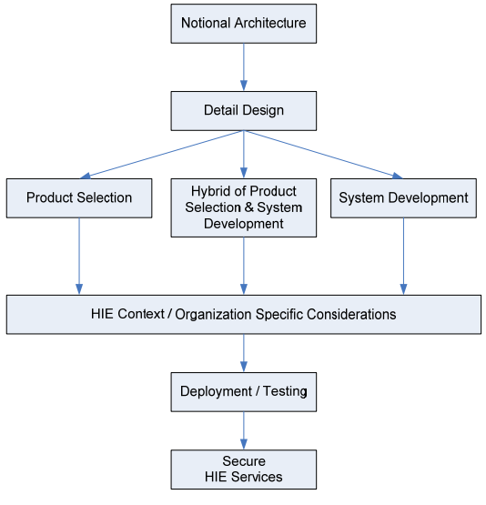
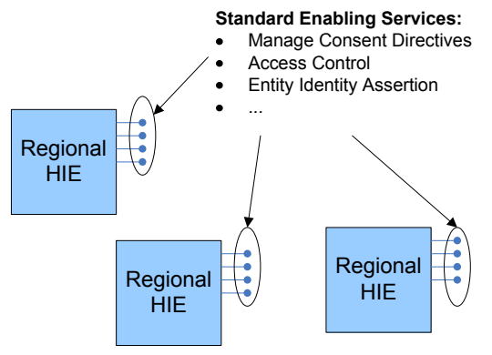
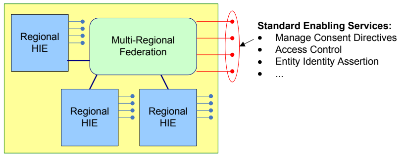
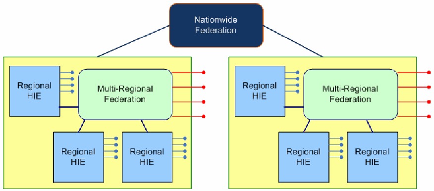

NIST IR 7497 日本語訳
英語タイトル : Security Architecture Design Process for Health Information Exchanges (HIEs)日本語タイトル : 医療情報交換（HIE）のためのセキュリティアーキテクチャ設計プロセス
公開日 : 2010-09-30
原文URL : https://csrc.nist.gov/pubs/ir/7497/final
翻訳編集 : 自動生成（有志による非公式の日本語訳）, 原文取得日 : 2026-10-31, 訳文 : 497 / 498 ブロック
[要約] NIST IR 7497 は、政府と民間で共通する実践を活用して、医療情報の交換（HIE）のための技術的セキュリティアーキテクチャを設計する体系的な手法を示し、これらの実践を HIE の開発にどのように適用できるかを示す刊行物です。設計プロセスは、基本方針（Capstone Policies）、実現サービス（Enabling Services）、実現プロセス（Enabling Processes）、概念アーキテクチャ（Notional Architecture）、技術的解決策と標準の 5 つの層で構成され、本書はそれぞれの目的と相互の関係を定義します。アドホック HIE、地域 HIE、複数地域 HIE、全国 HIE という HIE のコンテキストを説明し、地域 HIE を用いた全国 HIE の構築についても述べています。付録では、臨床評価シナリオの例を用いて、このセキュリティアーキテクチャ設計プロセスの適用を示しています。
NISTIR 7497
NISTIR 7497
Security Architecture Design Process for Health Information Exchanges (HIEs)
医療情報交換（HIE）のためのセキュリティアーキテクチャ設計プロセス
Matthew Scholl
Kevin Stine
Kenneth Lin
Daniel Steinberg
Matthew Scholl
Kevin Stine
Kenneth Lin
Daniel Steinberg
［NIST のロゴ。公的な標章のため、この非公式サイトには掲載していません。原本 PDF を参照してください。］
NISTIR 7497
NISTIR 7497
Security Architecture Design Process for Health Information Exchanges (HIEs)
医療情報交換（HIE）のためのセキュリティアーキテクチャ設計プロセス
Matthew Scholl
Kevin Stine
Computer Security Division
Information Technology Laboratory
National Institute of Standards and Technology
Gaithersburg, MD 20899
Matthew Scholl
Kevin Stine
コンピュータセキュリティ部門
情報技術研究所
米国国立標準技術研究所
Gaithersburg, MD 20899
Kenneth Lin
Daniel Steinberg
Booz Allen Hamilton
Kenneth Lin
Daniel Steinberg
Booz Allen Hamilton
September 2010
2010 年 9 月
U.S. Department of Commerce
Gary Locke, Secretary
米国商務省
Gary Locke 長官
National Institute of Standards and Technology
Patrick D. Gallagher, Director
米国国立標準技術研究所
Patrick D. Gallagher 所長
Acknowledgements
謝辞
The authors, Matthew Scholl and Kevin Stine from NIST and Kenneth Lin and Daniel Steinberg from Booz Allen, wish to thank their colleagues and reviewers who contributed greatly to the document’s development. A special note of thanks goes to Denise Tauriello and Christina Salameh from Booz Allen for their keen and insightful assistance throughout the development of this document. The authors also gratefully acknowledge and appreciate the many contributions from individuals in the public and private sectors whose thoughtful and constructive comments improved the quality and usefulness of this publication.
著者である NIST の Matthew Scholl と Kevin Stine、および Booz Allen の Kenneth Lin と Daniel Steinberg は、本文書の作成に大きく貢献した同僚と査読者に感謝します。Booz Allen の Denise Tauriello と Christina Salameh には、本文書の作成を通じて鋭く洞察に富んだ支援をいただき、特に感謝します。また、著者は、本刊行物の質と有用性を高める思慮深く建設的な意見を寄せてくださった、公的部門および民間部門の多くの方々の貢献にも深く感謝します。
Certain commercial entities, equipment, or materials may be identified in this document in order to describe an experimental procedure or concept adequately. Such identification is not intended to imply recommendation or endorsement by the National Institute of Standards and Technology, nor is it intended to imply that the entities, materials, or equipment are necessarily the best available for the purpose.
本文書では、実験の手順や概念を適切に説明するために、特定の商業的主体、機器、または材料に言及している場合があります。こうした言及は、米国国立標準技術研究所による推奨や支持を意味するものではなく、それらの主体、材料、または機器がその目的に最適であることを意味するものでもありません。
TABLE OF CONTENTS
目次
TABLES AND FIGURES
表と図
Table 1. Capstone Policy Drivers and Their Implications — 10
表 1. 基本方針の推進要因とその含意 — 10
Table 2. Enabling Services and Definitions — 13
表 2. 実現サービスと定義 — 13
Table 3. Illustrative Examples of Assurance Levels — 23
表 3. 保証レベルの例 — 23
Table 4. Authentication Assurance Levels are Mapped to Authentication Credentials — 23
表 4. 認証の保証レベルと認証用クレデンシャルの対応づけ — 23
Table 5. Enabling Services for Each HIE — A-4
表 5. 各 HIE の実現サービス — A-4
Table 6. Processes for Credential Acceptance — A-6
表 6. クレデンシャル受け入れのプロセス — A-6
Table 7. Acceptance of Third-Party Authentication Credentials — A-7
表 7. 第三者の認証用クレデンシャルの受け入れ — A-7
Figure 1. HIE Contexts — 5
図 1. HIE のコンテキスト — 5
Figure 2. HIE Security Architecture Design Process — 7
図 2. HIE セキュリティアーキテクチャ設計プロセス — 7
Figure 3. Enabling Services — 13
図 3. 実現サービス — 13
Figure 4. Notional Architecture Development Process — 22
図 4. 概念アーキテクチャの開発プロセス — 22
Figure 5. Basic Identity and Access Management Components — 24
図 5. 基本的なアイデンティティ・アクセス管理の構成要素 — 24
Figure 6. Web Services Security Standards — 26
図 6. Web サービスのセキュリティ標準 — 26
Figure 7. Illustrative Steps from Notional Architecture to Secure HIE Services — 27
図 7. 概念アーキテクチャから安全な HIE サービスへの手順の例 — 27
Figure 8. Regional HIEs with Standard Enabling Services — 28
図 8. 標準の実現サービスを備えた地域 HIE — 28
Figure 9. Multi-Regional HIE with Federated Enabling Services — 29
図 9. 連携した実現サービスを備えた複数地域 HIE — 29
Figure 10. Nationwide HIE with Federated Data Protection Services — 29
図 10. 連携したデータ保護サービスを備えた全国 HIE — 29
Figure 11. Clinical Assessment Scenario of 2008 ONC Personalized Healthcare Use Case — A-1
図 11. 2008 年 ONC 個別化医療ユースケースの臨床評価シナリオ — A-1
Figure 12. Illustrative Clinical Assessment Scenario — A-2
図 12. 臨床評価シナリオの例 — A-2
Figure 13. Illustrative Notional Architecture for Entity Identity Assertion Service — A-8
図 13. エンティティ ID アサーションサービスの概念アーキテクチャの例 — A-8
Figure 14. Illustrative Technical Solutions for Entity Identity Assertion Service — A-9
図 14. エンティティ ID アサーションサービスの技術的解決策の例 — A-9
1.0 Executive Summary
1.0 エグゼクティブサマリー
Protecting electronic patient health information is crucial to developing systems and structures that support the exchange of that information among healthcare providers, payers, and consumers using Health Information Exchanges (HIEs).1 As noted in the Summary of the Nationwide Health Information Network (NHIN) report from the Office of the National Coordinator, “An important core competency of the HIE is to maintain a trusting and supportive relationship with the organizations that provide data to, and retrieve data from, one another through the HIE. The trust requirement is met through a combination of legal agreements, advocacy, and technology for ensuring meaningful information interchange in a way that has appropriate protections.”2
電子的な患者の医療情報を保護することは、医療提供者、保険者、消費者が医療情報交換（HIE）1を用いてその情報を交換することを支えるシステムと構造を整備するうえで、極めて重要です。国家医療情報技術調整官室（Office of the National Coordinator）による全国医療情報ネットワーク（NHIN）報告書の要約には、「HIE の重要な中核能力は、HIE を通じて互いにデータを提供し取得する組織との間で、信頼に基づく協力的な関係を維持することです。この信頼の要件は、法的な合意、啓発活動、そして適切な保護のもとで意味のある情報交換を確保するための技術の組み合わせによって満たされます」と記されています2。
The purpose of this publication is to provide a systematic approach to designing a technical security architecture for the exchange of health information that leverages common government and commercial practices and that demonstrates how these practices can be applied to the development of HIEs. This publication assists organizations in ensuring that data protection is adequately addressed throughout the system development life cycle, and that these data protection mechanisms are applied when the organization develops technologies that enable the exchange of health information.
本刊行物の目的は、政府と民間で共通する実践を活用して医療情報の交換のための技術的セキュリティアーキテクチャを設計する体系的な手法を示し、これらの実践を HIE の開発にどのように適用できるかを示すことです。本刊行物は、システム開発ライフサイクル全体を通じてデータ保護が適切に扱われること、および医療情報の交換を可能にする技術を組織が開発する際にこれらのデータ保護メカニズムが適用されることを、組織が確実にするための助けとなります。
This operating model will help organizations that are implementing HIEs to:
この運用モデルは、HIE を実装する組織が次のことを行う助けとなります。
•Understand major regulations and business drivers;
•主要な規制とビジネス上の推進要因を理解します。
•Identify cross-organizational enabling services;
•組織をまたぐ実現サービスを特定します。
•Define supporting business processes (for each service);
•（各サービスについて）それを支える業務プロセスを定義します。
•Develop notional architectures (as a blueprint to support services, processes, and the selection of technical solutions); and
•（サービス、プロセス、および技術的解決策の選択を支える設計図として）概念アーキテクチャを開発します。
•Select technical solutions.
•技術的解決策を選択します。
2.0 Introduction
2.0 はじめに
The secure exchange of electronic health information is important to the development of electronic health records (EHRs) and to the improvement of the U.S. healthcare system. While the U.S. healthcare system is widely recognized as one of the most clinically advanced in the world, costs continue to rise, and often preventable medical errors occur. Health information technology (HIT), especially the development of electronic health records for use in both inpatient and ambulatory care settings, has the potential for providing reliable access to health information and thereby improving the healthcare system. However, the prospect of storing, moving, and sharing health information in electronic formats raises new challenges on how to ensure that the data is adequately protected.
電子的な医療情報の安全な交換は、電子カルテ（EHR）の開発と米国の医療制度の改善にとって重要です。米国の医療制度は、臨床面で世界有数の先進性を備えていると広く認められていますが、費用は上がり続け、予防可能な医療過誤もしばしば起こっています。医療情報技術（HIT）、特に入院・外来の両方の医療現場で使われる電子カルテの開発は、医療情報への信頼できるアクセスを提供し、それによって医療制度を改善する可能性を持っています。しかし、医療情報を電子形式で保存し、移動し、共有する見通しは、そのデータをどのように適切に保護するかという新たな課題を生み出します。
Currently, health information3 is scattered among various parties, including providers and payers, with patients maintaining limited control over the collection, access, use, and disclosure of their health information. The challenge of protecting this health information is exacerbated when an electronic version of health information can be shared much more easily than health records are exchanged today. The protection of patients’ health information is an important factor in the adoption of the EHR.
現在、医療情報3は、医療提供者や保険者を含むさまざまな関係者に分散しており、患者はその情報の収集、アクセス、使用、開示に対して限られた管理しか持っていません。医療情報の電子版が、現在の診療記録の交換よりもはるかに容易に共有できるようになると、この医療情報を保護する課題はいっそう大きくなります。患者の医療情報の保護は、EHR の普及における重要な要素です。
Integrating security across different business and technical layers is necessary in order to address complex data protection challenges for the exchange of health information and HIEs. This publication presents a five-layered architecture design process as a systematic approach to identify and implement security and privacy. The five layers, or phases of activity, required for ensuring the protection of this form of data are: 1) capstone policies; 2) enabling services; 3) enabling processes; 4) notional architectures; and 5) technology solutions and standards. The security architecture design process provides a scalable, standardized, and repeatable methodology to guide HIE system development in the integration of data protection mechanisms across each layer, and results in a technology selection and design that satisfies high-level requirements and mitigates identified risks to organizational risk tolerances.
医療情報の交換と HIE に伴う複雑なデータ保護の課題に対処するには、さまざまなビジネス層と技術層にまたがってセキュリティを統合する必要があります。本刊行物は、セキュリティとプライバシーを特定して実装するための体系的な手法として、5 層のアーキテクチャ設計プロセスを示します。この形式のデータの保護を確実にするために必要な 5 つの層、すなわち活動の段階は、1) 基本方針（capstone policies）、2) 実現サービス（enabling services）、3) 実現プロセス（enabling processes）、4) 概念アーキテクチャ（notional architectures）、5) 技術的解決策と標準です。セキュリティアーキテクチャ設計プロセスは、拡張可能で標準化された反復可能な方法論を提供し、各層にわたるデータ保護メカニズムの統合において HIE のシステム開発を導きます。その結果、上位レベルの要件を満たし、特定されたリスクを組織のリスク許容度に沿った水準まで低減する技術の選定と設計が得られます。
2.1 Purpose and Scope
2.1 目的と適用範囲
The purpose of this publication is to provide a systematic approach to designing a technical security architecture for the exchange of health information by leveraging common government and commercial practices, and to demonstrate how these practices can be applied to the development of HIEs. The publication defines the five layers of this design process, their purposes and their relationships, and how they work together to facilitate the secure exchange of health information.
本刊行物の目的は、政府と民間で共通する実践を活用して医療情報の交換のための技術的セキュリティアーキテクチャを設計する体系的な手法を示し、これらの実践を HIE の開発にどのように適用できるかを示すことです。本刊行物は、この設計プロセスの 5 つの層、それぞれの目的と相互の関係、および医療情報の安全な交換を促進するためにそれらがどのように連携するかを定義します。
To exchange health information, two or more organizations will be involved. To secure the exchange of health information, the exchanging organizations and the means of conducting the exchange must have appropriate security and privacy controls. This publication focuses specifically on the exchange of health information and assumes that the exchanging organizations have an established security architecture to protect health information before and after the exchange. To ensure that health information is adequately protected, the “non-exchange” portions of the data usage, including collection, storage, modification, and destruction, must also receive security and privacy protections, which may include contingency and disaster recovery planning, configuration management, and other processes and technologies. This publication acknowledges the importance of those protections, but does not discuss the development of the entire information technology architecture of an HIE.
医療情報を交換するには、2 つ以上の組織が関与します。医療情報の交換を安全にするには、交換を行う組織と交換を実施する手段に、適切なセキュリティおよびプライバシー管理策が備わっていなければなりません。本刊行物は特に医療情報の交換に焦点を当てており、交換を行う組織が、交換の前後で医療情報を保護するためのセキュリティアーキテクチャをすでに確立していることを前提とします。医療情報が適切に保護されるようにするには、データ利用のうち「交換以外」の部分、すなわち収集、保存、変更、破棄にもセキュリティとプライバシーの保護が必要であり、これには、緊急時対応計画および災害復旧計画、構成管理、その他のプロセスや技術が含まれる場合があります。本刊行物はそれらの保護の重要性を認めていますが、HIE の情報技術アーキテクチャ全体の開発については論じません。
Many organizations must comply with data protection laws at the federal, state, and local levels that require them to conduct certain activities under specific operational parameters. While this publication does not directly address nontechnical issues such as those related to laws, regulations, and policies, specific roles and responsibilities, training, human resources issues, or nontechnical privacy issues, it does describe an architecture design process that allows for their integration into the information technology architecture of an HIE.
多くの組織は、連邦、州、地方の各レベルのデータ保護法を遵守しなければならず、それらの法は、特定の運用上のパラメーターのもとで一定の活動を行うことを組織に求めています。本刊行物は、法律・規制・方針に関する問題、特定の役割と責任、トレーニング、人事上の問題、技術以外のプライバシー問題といった非技術的な課題を直接には扱いませんが、それらを HIE の情報技術アーキテクチャに統合できるようにするアーキテクチャ設計プロセスを説明します。
The security architecture process applies to the exchange of health information and the deployment of HIEs. The architecture can be used to protect health information at various risk and sensitivity levels. This process, for example, can accommodate high-risk health information, such as information about treatments provided to particular patients, as well as lower-risk information, such as information that may be publicly available through other means yet remains sensitive in combination.
セキュリティアーキテクチャのプロセスは、医療情報の交換と HIE の展開に適用されます。このアーキテクチャは、さまざまなリスクレベルおよび機微性レベルの医療情報を保護するために使用できます。たとえばこのプロセスは、特定の患者に提供された治療に関する情報のようなリスクの高い医療情報にも、他の手段で公開されている可能性がありながら、組み合わさると機微になる情報のようなリスクの低い情報にも対応できます。
This document does not address governance or legal issues. HIEs should consult with legal counsel to identify applicable laws and regulations that will impact their operations and infrastructures, as well as to develop other legal documents such as memoranda of understanding (MOUs), contracts, data use and reciprocal support agreements, and service-level agreements (SLAs).
本文書は、ガバナンスや法的な問題を扱いません。HIE は、自らの運用とインフラストラクチャに影響する適用法令を特定するため、また覚書（MOU）、契約、データ利用・相互支援協定、サービスレベル合意書（SLA）などの他の法的文書を作成するために、法律顧問に相談すべきです。
While the main focus of this document is security architecture, it is understood that privacy protections are essential to the collection, access, use, and disclosure of health information. For the purposes of this document, technical assurance of privacy is viewed as a subset of confidentiality. Implementation of security technologies that support confidentiality objectives may in turn support the technical implementation of privacy policy.
本文書の主な焦点はセキュリティアーキテクチャですが、医療情報の収集、アクセス、使用、開示にはプライバシー保護が不可欠であることは理解されています。本文書では、プライバシーの技術的保証を機密性の一部として捉えます。機密性の目的を支えるセキュリティ技術を実装することは、ひいてはプライバシー方針の技術的な実装を支えることにもなります。
2.2 Audience
2.2 対象読者
The principal audience for this publication includes HIE executives, HIE security policy developers, HIE security architects, and technical solution providers. These individuals will be most interested in its objective of providing an approach to developing the security architecture necessary for an HIE. These groups may be involved in different stages of the HIE life cycle. This document considers all stages of that life cycle, and can therefore assist each of the aforementioned groups in identifying appropriate technologies for HIEs under development, or in evaluating the effectiveness and appropriateness of technologies already in use in existing HIEs.
本刊行物の主な対象読者は、HIE の経営幹部、HIE のセキュリティ方針の策定者、HIE のセキュリティアーキテクト、および技術的解決策の提供者です。これらの人々は、HIE に必要なセキュリティアーキテクチャを開発する手法を提供するという本刊行物の目的に、最も関心を持つと考えられます。これらのグループは、HIE のライフサイクルのさまざまな段階に関与する場合があります。本文書はそのライフサイクルのすべての段階を考慮しているため、上記の各グループが、開発中の HIE に適した技術を特定したり、既存の HIE ですでに使われている技術の有効性と適切性を評価したりする際の助けとなります。
2.3 Document Organization
2.3 文書の構成
The remaining sections of this document discuss the following:
本文書の以降の節では、次の内容を扱います。
•Section 3.0, HIE Contexts, describes the scope and characteristics of the four main HIE contexts discussed in this document.
•第 3.0 節「HIE のコンテキスト」では、本文書で扱う 4 つの主要な HIE のコンテキストの範囲と特徴を説明します。
•Section 4.0, HIT Security Architecture Design Process, introduces the five-layer operating model that can be used for designing a security architecture to support the exchange of health information.
•第 4.0 節「HIT セキュリティアーキテクチャ設計プロセス」では、医療情報の交換を支えるセキュリティアーキテクチャの設計に使える 5 層の運用モデルを紹介します。
•Section 5.0, Capstone Policies – Layer 1, identifies and describes many major U.S. laws, regulations, and guidelines that influence and, in many cases, drive the development of an organization’s unified policies (“Capstone Policies”) for ensuring the secure exchange of health information.
•第 5.0 節「基本方針（Capstone Policies）– 第 1 層」では、医療情報の安全な交換を確実にするための組織の統一方針（「基本方針」）の策定に影響を与え、多くの場合その推進要因となる、米国の主要な法律、規制、ガイドラインを特定し、説明します。
•Section 6.0, Enabling Services – Layer 2, identifies and discusses twelve services, derived from common industry-wide practices, necessary to implement organizations’ Capstone Policies.
•第 6.0 節「実現サービス（Enabling Services）– 第 2 層」では、業界全体の共通の実践から導かれた、組織の基本方針を実施するために必要な 12 のサービスを特定し、論じます。
•Section 7.0, Enabling Processes – Layer 3, describes processes that expand the Enabling Services into detailed, HIE-specific business requirements.
•第 7.0 節「実現プロセス（Enabling Processes）– 第 3 層」では、実現サービスを、HIE 固有の詳細な業務要件へと展開するプロセスを説明します。
•Section 8.0, Notional Architecture – Layer 4, identifies architecture design principles and constructs that will serve as inputs, along with Capstone Policies and Enabling Services and Processes, to create a Notional Architecture, which is a blueprint for developing and implementing technical solutions.
•第 8.0 節「概念アーキテクチャ（Notional Architecture）– 第 4 層」では、基本方針、実現サービス、実現プロセスとともに概念アーキテクチャを作成するための入力となる、アーキテクチャ設計原則と構成要素を特定します。概念アーキテクチャは、技術的解決策を開発し実装するための設計図です。
•Section 9.0, Technology Solutions and Standards – Layer 5, illustrates the steps to select the technical solutions and data standards that will satisfy the requirements specified in the Notional Architecture.
•第 9.0 節「技術的解決策と標準 – 第 5 層」では、概念アーキテクチャで規定された要件を満たす技術的解決策とデータ標準を選択する手順を示します。
•Section 10.0, Building a Nationwide HIE using Regional HIEs, discusses using a federation of Regional HIEs to construct a Nationwide HIE with federated security services.
•第 10.0 節「地域 HIE を用いた全国 HIE の構築」では、連携したセキュリティサービスを備えた全国 HIE を、地域 HIE の連合を用いて構築することを論じます。
•Appendix A, Applying the Security Architecture Design Process, employs the five-layer design process to a specific American Health Information Community (AHIC4) Use Case to illustrate the analyses and considerations that need to be made when applying this model to the exchange of health information.
•付録 A「セキュリティアーキテクチャ設計プロセスの適用」では、この 5 層の設計プロセスを、特定の米国医療情報コミュニティ（AHIC4）のユースケースに適用し、このモデルを医療情報の交換に適用する際に行う必要がある分析と考慮事項を示します。
•Appendix B, Acronyms, identifies and defines acronyms used in this document.
•付録 B「略語」では、本文書で使用する略語を特定し、定義します。
•Appendix C, Glossary, defines terms used in this document.
•付録 C「用語集」では、本文書で使用する用語を定義します。
•Appendix D, References, provides references and related source material.
•付録 D「参考文献」では、参考文献と関連する出典資料を示します。
3.0 HIE Contexts
3.0 HIE のコンテキスト
There are many conditions under which health information can be exchanged. Information can be sent to and from many different kinds of entities, in various forms of media, and can be subject to a wide range of laws, regulations, and policies. The set conditions under which the information is transmitted is sometimes called the “context” of the information exchange. This section presents the four main HIE contexts - Ad Hoc, Regional, Multi-Regional, and Nationwide - for which this security architecture design process applies. Figure 1 illustrates the HIE contexts.
医療情報を交換できる条件は数多くあります。情報は、さまざまな種類の主体との間で、さまざまな形態の媒体によって送受信され得るものであり、広範な法律、規制、方針の対象となり得ます。情報が伝送される際の一連の条件は、情報交換の「コンテキスト」と呼ばれることがあります。この節では、このセキュリティアーキテクチャ設計プロセスが適用される 4 つの主要な HIE のコンテキスト、すなわちアドホック、地域、複数地域、全国を示します。図 1 は、HIE のコンテキストを示しています。
Figure 1. HIE Contexts
図 1. HIE のコンテキスト
![Chart of the four HIE contexts. The vertical axis is "Scale of Exchange Interoperability" (Low to High) and the horizontal axis is "Complexity of Health Information Exchange (HIE)" (Low to High). Nested rectangles grow toward the upper right: "Ad-Hoc" (- Fax/phone based; - Known entities); "Regional" (- EHR Based; - Trust Agreements; - Centralized / Federated; - No State Jurisdiction Conflicts); "Multi-Regional" (- EHR Based; - Multiple Regional HIEs; - Federated; - No State Jurisdiction Conflicts); "Nationwide" (- EHR Based; - Multiple State HIEs; - National Federation; - Multiple State Jurisdiction).](assets/ir-7497/p0010-table-01.png)
4つの HIE の文脈を示す図です。縦軸は「Scale of Exchange Interoperability」（低〜高）、横軸は「Complexity of Health Information Exchange (HIE)」（低〜高）です。右上に向かって大きくなる長方形が重なっています。「Ad-Hoc」（ファクス・電話による、既知の相手）、「Regional」（EHR ベース、信頼の合意、集中型・連合型、州の管轄の衝突なし）、「Multi-Regional」（EHR ベース、複数の地域 HIE、連合型、州の管轄の衝突なし）、「Nationwide」（EHR ベース、複数の州の HIE、全国の連合、複数の州の管轄）です。
3.1 Ad Hoc HIEs
3.1 アドホック HIE
An Ad Hoc HIE occurs when two healthcare organizations exchange health information, usually under the precondition of familiarity and trust, using existing and usual office infrastructure such as mail, fax, e-mail, and phone calls. Health organizations that currently participate in Ad Hoc HIEs may find it impractical to justify the cost of migrating these activities into electronic health record (EHR)-based HIEs unless there are specific incentives making the process more appealing, or regional resources making the process easier. An Ad Hoc HIE can be effective for small-scale exchanges of health information, but Ad Hoc HIEs may not be able to integrate easily with each other in order to grow and expand. Such growth, or “scaling,” requires familiarity with the participants and technologies used to create the infrastructure. Otherwise, the members of the Ad Hoc HIE may not have sufficient trust in the larger HIE and its participants to risk the privacy and security of their own information and systems.
アドホック HIE は、2 つの医療機関が、通常は互いによく知っていて信頼していることを前提に、郵便、ファックス、電子メール、電話といった既存の通常のオフィスインフラストラクチャを使って医療情報を交換する場合に成り立ちます。現在アドホック HIE に参加している医療機関は、そのプロセスをより魅力的にする具体的なインセンティブや、そのプロセスを容易にする地域のリソースがない限り、これらの活動を電子カルテ（EHR）ベースの HIE に移行する費用を正当化することは現実的でないと考える場合があります。アドホック HIE は小規模な医療情報の交換には有効ですが、アドホック HIE どうしは、成長し拡大するために容易に統合できない場合があります。そのような成長、すなわち「スケーリング」には、インフラストラクチャの構築に用いられる参加者と技術についての知識が必要です。そうでなければ、アドホック HIE の構成員は、より大きな HIE とその参加者を、自らの情報とシステムのプライバシーとセキュリティを賭けるに足るほど十分には信頼できない場合があります。
3.2 Regional HIEs
3.2 地域 HIE
Regional HIEs are those that consist of two or more legally and commercially independent institutions that share EHRs, but where no state jurisdictional issues exist that prevent or impede the sharing of data.5 The HIE network includes clinicians, hospitals, labs, pharmacies, insurance companies, and other key health domain players. Participating organizations will normally draft a trust agreement to govern the information exchange. Depending on the scale, the technical architecture might be centralized or federated. Regional HIEs are large enough to justify the associated operational costs because the efficiencies realized offset these costs. They are simpler to administer than Multi-Regional and Nationwide HIEs because of their smaller scale and lack of state jurisdictional conflicts.
地域 HIE は、法的にも商業的にも独立した 2 つ以上の機関が EHR を共有する HIE であって、データの共有を妨げたり阻害したりする州の管轄上の問題がないものです5。HIE ネットワークには、臨床医、病院、検査機関、薬局、保険会社、その他の医療分野の主要な関係者が含まれます。参加組織は通常、情報交換を律する信頼協定の案を作成します。規模に応じて、技術アーキテクチャは集中型の場合も連合型の場合もあります。地域 HIE は、実現される効率によって運用コストが相殺されるため、それに伴う運用コストを正当化するのに十分な大きさがあります。地域 HIE は、規模が小さく、州の管轄をめぐる対立もないため、複数地域 HIE や全国 HIE よりも管理が簡単です。
3.3 Multi-Regional HIEs
3.3 複数地域 HIE
Multi-Regional HIEs connect multiple Regional HIEs. They may cross state lines or other physical boundaries. They are usually EHR-based. Since they connect multiple Regional HIEs, they will likely have a federated technical architecture. For Multi-Regional HIEs, conflicts of laws may require complex solutions.
複数地域 HIE は、複数の地域 HIE を接続します。州境やその他の物理的な境界をまたぐ場合があります。通常は EHR ベースです。複数の地域 HIE を接続するため、技術アーキテクチャは連携型になる可能性が高いです。複数地域 HIE では、法律の抵触により複雑な解決策が必要になる場合があります。
3.4 Nationwide HIEs
3.4 全国 HIE
A Nationwide HIE would connect many Regional or Multi-Regional HIEs. It would require the use of some form of EHR, involve multiple state jurisdictions, and have a nationwide federated technical architecture. Multi-Regional and Nationwide HIEs have a different focus than Regional HIEs. Regional HIEs are basic building blocks that focus on developing effective and localized solutions to meet specific HIE needs (research, clinical trials, patient transfer, etc.). Multi-Regional and Nationwide HIEs focus on building the backbone infrastructure needed to connect various Regional HIEs.
全国 HIE は、多数の地域 HIE または複数地域 HIE を接続するものです。何らかの形の EHR の使用が必要であり、複数の州の管轄が関わり、全国規模の連携型技術アーキテクチャを備えます。複数地域 HIE と全国 HIE は、地域 HIE とは焦点が異なります。地域 HIE は、特定の HIE のニーズ（研究、臨床試験、患者の転送など）を満たす、効果的で局所的な解決策の開発に焦点を当てた基本的な構成要素です。複数地域 HIE と全国 HIE は、さまざまな地域 HIE を接続するために必要な基幹インフラストラクチャの構築に焦点を当てます。
This publication focuses on the needs of Regional HIEs. Assuming that the security architectures and other system aspects of Regional HIEs are interoperable, these HIEs can serve as the “building blocks” for larger Multi-Regional HIEs, and therefore represent a scalable solution for the ultimate emergence of a Nationwide HIE.
本刊行物は、地域 HIE のニーズに焦点を当てています。地域 HIE のセキュリティアーキテクチャやシステムのその他の側面が相互運用可能であると仮定すれば、これらの HIE はより大きな複数地域 HIE の「構成要素」となることができ、したがって、最終的な全国 HIE の出現に向けた拡張可能な解決策となります。
4.0 HIE Security Architecture Design Process
4.0 HIE セキュリティアーキテクチャ設計プロセス
Technical solutions that facilitate the exchange of health information can be complex. With various policies and standards, and an ever-changing technical landscape, a systematic approach to designing an HIE security architecture can allow practitioners to analyze all policy requirements and ultimately refine them into a technology-neutral, vendor-neutral, standards-based architecture to drive technical solution decisions.
医療情報の交換を促進する技術的解決策は、複雑になり得ます。さまざまな方針や標準があり、技術環境も絶えず変化する中で、HIE のセキュリティアーキテクチャを設計する体系的な手法を用いることで、実務者はすべての方針要件を分析し、最終的にそれらを、技術的解決策の決定を導く、技術中立・ベンダー中立で標準に基づくアーキテクチャへと具体化できます。
The use of a systematic approach plays a significant role in a successful and secure HIE implementation. The HIE security architecture design process was developed to assist HIEs in meeting this need by providing a five-layer methodology for successful HIE security technology identification and selection as illustrated in the following figure:
体系的な手法の使用は、HIE の安全な実装を成功させるうえで重要な役割を果たします。HIE セキュリティアーキテクチャ設計プロセスは、次の図に示すように、HIE のセキュリティ技術の特定と選定を成功させるための 5 層の方法論を提供することで、HIE がこのニーズを満たす助けとなるよう開発されました。
Figure 2. HIE Security Architecture Design Process
図 2. HIE セキュリティアーキテクチャ設計プロセス
![Layered diagram of the HIE security architecture design process, topped by a tab labeled "Protect Data". Five numbered layers from top to bottom: 1 "CAPSTONE POLICIES"; 2 "ENABLING SERVICES", containing a bar "Risk Assessment" above eleven vertical boxes "Entity Identity Assertion", "Credential Management", "Access Control", "Privilege Management", "Collect & Communicate Audit Trail", "Document Integrity", "Secured Communication Channel", "Document Confidentiality", "De-Identification", "Non-Repudiation Of Origin", "Manage Consent Directives"; 3 "ENABLING PROCESSES", with three small flowchart icons; 4 "NOTIONAL ARCHITECTURES", with three small network-diagram icons; 5 "TECHNOLOGY SOLUTIONS AND STANDARDS".](assets/ir-7497/p0012-figure-107.png)
HIE セキュリティアーキテクチャ設計プロセスの階層図です。最上部に「Protect Data」（データの保護）のタブがあり、上から番号付きの5層が並びます。1「CAPSTONE POLICIES」（基本方針）、2「ENABLING SERVICES」（実現サービス。「Risk Assessment」（リスク評価）の横棒の下に、「Entity Identity Assertion」「Credential Management」「Access Control」「Privilege Management」「Collect & Communicate Audit Trail」「Document Integrity」「Secured Communication Channel」「Document Confidentiality」「De-Identification」「Non-Repudiation Of Origin」「Manage Consent Directives」の11個の縦長の箱）、3「ENABLING PROCESSES」（実現プロセス。小さな流れ図のアイコン3つ）、4「NOTIONAL ARCHITECTURES」（概念アーキテクチャ。小さなネットワーク図のアイコン3つ）、5「TECHNOLOGY SOLUTIONS AND STANDARDS」（技術ソリューションと標準）です。
1.Capstone Policies: Capstone Policies are those developed by an organization that incorporates all requirements and guidance for protecting health information within HIEs. The contents and scope of Capstone Policies can be driven by state or federal laws or regulations, organizational policies, business needs, or policies developed for specific HIEs. The most efficient developer of the Capstone Policies will be the organization that can set standards for the entire HIE. A single participant in an HIE, for example, may be subject to a certain set of laws, but coordination across the entire HIE will be necessary to ensure that all drivers of Capstone Policies for all desired participants are identified and incorporated.
1.基本方針（Capstone Policies）: 基本方針は、HIE 内で医療情報を保護するためのすべての要件とガイダンスを組み込むものとして、組織が策定する方針です。基本方針の内容と範囲は、州法または連邦法・規制、組織の方針、業務上のニーズ、または特定の HIE のために策定された方針によって決まる場合があります。基本方針の策定者として最も効率的なのは、HIE 全体の標準を定められる組織です。たとえば、HIE の 1 つの参加者が一定の法律の対象であっても、参加を希望するすべての参加者に関する基本方針の推進要因をすべて特定して組み込むには、HIE 全体にわたる調整が必要になります。
2.Enabling Services: Enabling Services define the nomenclature of services required to implement Capstone Policies. Enabling Services are designed to be HIE context-independent. Services presented in this publication are derived from common industry-wide data protection practices and then customized to specifically address the requirements of HIEs.
2.実現サービス（Enabling Services）: 実現サービスは、基本方針を実施するために必要なサービスの名称体系を定義します。実現サービスは、HIE のコンテキストに依存しないように設計されています。本刊行物で示すサービスは、業界全体に共通するデータ保護の実践から導かれ、そのうえで HIE の要件に具体的に対応するようにカスタマイズされています。
3.Enabling Processes: Enabling Processes define the operational baseline via use cases and scenarios for Enabling Services. Enabling Processes are HIE context-dependent. Two HIEs could, for example, have different Enabling Processes implementing the same Enabling Service (e.g., “Access Control”).
3.実現プロセス（Enabling Processes）: 実現プロセスは、実現サービスのユースケースとシナリオを通じて、運用上のベースラインを定義します。実現プロセスは、HIE のコンテキストに依存します。たとえば、2 つの HIE が、同じ実現サービス（たとえば「アクセス制御」）を実施するために、異なる実現プロセスを持つことがあります。
4.Notional Architectures: Notional Architectures define the technical constructs (e.g., role-based access control and directory services) and their relationships to implement Enabling Processes. The Notional Architecture is the blueprint to drive the selection of technical solutions and data standards. The Notional Architecture is standards-based, technology-neutral, and vendor-neutral.
4.概念アーキテクチャ（Notional Architectures）: 概念アーキテクチャは、実現プロセスを実施するための技術的構成要素（たとえばロールベースアクセス制御やディレクトリサービス）とそれらの関係を定義します。概念アーキテクチャは、技術的解決策とデータ標準の選択を導く設計図です。概念アーキテクチャは、標準に基づき、技術中立かつベンダー中立です。
5.Technology Solutions and Standards: Technical solutions and data standards represent the selected technical solutions and data standards needed to implement the Notional Architecture.
5.技術的解決策と標準（Technology Solutions and Standards）: 技術的解決策とデータ標準は、概念アーキテクチャを実装するために必要な、選択された技術的解決策とデータ標準を表します。
Each layer of the design methodology is described in the following sections.
この設計方法論の各層は、以降の節で説明します。
5.0 Capstone Policies – Layer 1
5.0 基本方針（Capstone Policies）– 第 1 層
Capstone Policies are those policies that are developed by governing or coordinating institutions of HIEs. They provide overall requirements and guidance for protecting health information within and across those HIEs. Capstone Policies must address the requirements imposed by:
基本方針は、HIE を統括または調整する機関が策定する方針です。基本方針は、それらの HIE 内および HIE 間で医療情報を保護するための全体的な要件とガイダンスを提供します。基本方針は、次のものによって課される要件に対応しなければなりません。
•all laws, regulations, and guidelines at the federal, state, and local levels;
•連邦、州、地方の各レベルのすべての法律、規制、ガイドライン。
•business needs; and
•業務上のニーズ。
•policies at the institutional and HIE levels.
•機関レベルおよび HIE レベルの方針。
In developing Capstone Policies, organizations must identify the requirements that these laws, regulations, and other authorities impose on HIEs. One challenge in ascertaining that all such requirements have been identified is that these sources of requirements may not be specific to health information systems. For federally owned or operated systems, for example, other requirements such as the Federal Information Security Management Act (FISMA6) will also need to be considered. For this and other reasons, organizations must consider the expert input of appropriate legal counsel in assembling these requirements.
基本方針を策定する際、組織は、これらの法律、規制、その他の権限が HIE に課す要件を特定しなければなりません。そのような要件がすべて特定されたことを確かめるうえでの課題の 1 つは、これらの要件の出典が、医療情報システムに特化したものではない場合があることです。たとえば、連邦政府が所有または運用するシステムでは、連邦情報セキュリティマネジメント法（FISMA6）などの他の要件も考慮する必要があります。この理由などから、組織は、これらの要件を取りまとめるにあたり、適切な法律顧問の専門的な意見を考慮しなければなりません。
Within this section, many major U.S. federal laws relevant to the development of HIE security and privacy architectures are identified. For virtually all U.S. entities, however, other federal and state laws will also need to be considered. These representative laws are identified to illustrate the language, scope, and effects that such relevant laws may have. In particular, participants in a HIE will want to be aware of any relevant state laws in the course of developing their Capstone Policies. Under the Health Insurance Portability and Accountability Act (HIPAA), more stringent state laws that may require additional or greater protections for health information must be followed. The existence of HIPAA does not negate such requirements or excuse the covered entity from addressing them.
この節では、HIE のセキュリティおよびプライバシーのアーキテクチャの開発に関連する、米国の主要な連邦法を数多く特定します。ただし、事実上すべての米国の主体にとって、他の連邦法や州法も考慮する必要があります。これらの代表的な法律は、関連する法律がもたらし得る文言、範囲、効果を示すために挙げています。特に、HIE の参加者は、基本方針を策定する過程で、関連する州法に注意を払いたいと考えるでしょう。医療保険の携行性と責任に関する法律（HIPAA）のもとでは、医療情報に対して追加的な、またはより大きな保護を求める可能性のある、より厳格な州法に従わなければなりません。HIPAA が存在することによって、そのような要件が無効になったり、対象事業体がそれらへの対応を免れたりすることはありません。
In many cases, relevant laws, regulations, and policies will impose other requirements aside from those that help identify Capstone Policies. These authorities may also establish broad goals or end states, without specifically defining Enabling Services, and may need to be interpreted based on industry best practices or reasonable safeguards. Addressing the text alone, therefore, may not be sufficient in order to ensure secure HIEs. In cases where authorities urge the institution of appropriate policies without proposing specific safeguards, practitioners should not confine themselves to developing Capstone Policies that merely satisfy compliance, but should view these authorities as setting only a minimum set of requirements. The HIPAA Security Rule, for example, explicitly encourages covered entities to develop security programs that are adequate, not merely to develop programs that nominally address the letter of the Rule. A covered entity’s security program must be appropriate for its particular mission and goals. The preamble to the Security Rule notes that its standards “establish a minimum level of security to be met by covered entities,” and that the intent of the Rule is not “to limit the level of security that may be agreed to between trading partners or others above this floor.”7 The authors of the preamble later state that “this final rule requires a floor of protection of all electronic health information. A covered entity has the option to exceed this floor. The sensitivity of information, the risks to and vulnerabilities of electronic health information, and the means that should be employed to protect it are business determinations and decisions to be made by each covered entity.”8
多くの場合、関連する法律、規制、方針は、基本方針の特定に役立つ要件のほかにも、別の要件を課します。これらの権限は、実現サービスを具体的に定義することなく、広範な目標や最終状態を定めている場合があり、業界のベストプラクティスや合理的な保護措置に基づいて解釈する必要が生じる場合があります。したがって、条文だけに対応していても、安全な HIE を確実にするには十分でない場合があります。権限が具体的な保護措置を提案せずに適切な方針の制定を促している場合、実務者は、コンプライアンスを満たすだけの基本方針を策定することにとどまるべきではなく、これらの権限が定めているのは最低限の要件のみであると捉えるべきです。たとえば HIPAA セキュリティ規則は、対象事業体に対し、規則の文言に名目上対応しただけのプログラムを策定するのではなく、十分なセキュリティプログラムを策定するよう明示的に奨励しています。対象事業体のセキュリティプログラムは、その固有の任務と目標に適したものでなければなりません。セキュリティ規則の前文は、その標準が「対象事業体が満たすべき最低限のセキュリティレベルを定める」ものであり、規則の意図は、取引相手その他の間でこの下限を超えて合意され得るセキュリティレベルを「制限すること」ではないと述べています7。前文の著者は後に、「この最終規則は、すべての電子的な医療情報の保護について下限を定めるものです。対象事業体は、この下限を上回ることを選択できます。情報の機微性、電子的な医療情報に対するリスクと脆弱性、およびそれを保護するために用いるべき手段は、業務上の判断であり、各対象事業体が下すべき決定です」と述べています8。
5.1 Health Insurance Portability and Accountability Act (HIPAA)
5.1 医療保険の携行性と責任に関する法律（HIPAA）
The Health Insurance Portability and Accountability Act of 1996 (HIPAA, Public Law 104-191) is the most well-known and influential law affecting the security and privacy practices of many healthcare organizations in the United States, specifically those that are “covered entities” under the Act. HIPAA will therefore affect the Capstone Policies of a great many of the expected participants in HIEs in the United States.
1996 年の医療保険の携行性と責任に関する法律（HIPAA、公法 104-191）は、米国の多くの医療機関、とりわけこの法律の「対象事業体」であるものに、そのセキュリティとプライバシーの実践の面で影響を与える、最もよく知られた影響力の大きい法律です。したがって HIPAA は、米国で HIE への参加が見込まれる非常に多くの参加者の基本方針に影響を与えます。
HIPAA required the Secretary of Health and Human Services (HHS) to create sets of regulations on several topics related to electronic healthcare transactions, including the privacy of health information (health information) and the security of electronic health information (ehealth information). Any private and secure health information exchange must therefore be able to support the standards of both the HIPAA Privacy Rule9 and the HIPAA Security Rule.10 This publication reflects the standards and implementation specifications of the HIPAA Security Rule that will drive the architectural framework and technical solutions of a mature HIE. However, the requirements of the Security Rule that do not necessarily create parameters or other requirements for the electronic exchange of health information are not explored. These requirements include policies and practices that may be implemented and enforced entirely at individual organizations, and are not relevant to the technical aspects of system interconnections. For a fuller discussion of the HIPAA Security Rule, including resources for understanding and addressing its requirements, see NIST Special Publication (SP) 800-66, Revision 1 (October 2008), An Introductory Resource Guide for Implementing the Health Insurance Portability and Accountability Act (HIPAA) Security Rule. For a discussion on the HIPAA Privacy Rule, see materials available through the HHS Office of Civil Rights at http://www.hhs.gov/ocr/privacy/hipaa/understanding/index.html.
HIPAA は、米国保健福祉省（HHS）長官に対し、医療情報のプライバシー（health information）や電子的な医療情報のセキュリティ（ehealth information）を含む、電子的な医療取引に関するいくつかの主題について規制を定めることを求めました。したがって、プライバシーと安全性を備えた医療情報交換は、HIPAA プライバシー規則9と HIPAA セキュリティ規則10の両方の標準を支えることができなければなりません。本刊行物は、成熟した HIE のアーキテクチャの枠組みと技術的解決策を方向づける、HIPAA セキュリティ規則の標準と実装仕様を反映しています。ただし、セキュリティ規則の要件のうち、医療情報の電子的な交換のためのパラメーターやその他の要件を必ずしも生み出さないものは、取り上げません。これらの要件には、個々の組織内で完全に実装し執行できる方針や実践が含まれ、システム相互接続の技術的側面には関係しません。HIPAA セキュリティ規則の詳しい説明、およびその要件を理解し対処するための資料については、NIST Special Publication (SP) 800-66, Revision 1 (October 2008), An Introductory Resource Guide for Implementing the Health Insurance Portability and Accountability Act (HIPAA) Security Rule を参照してください。HIPAA プライバシー規則の説明については、HHS 公民権局（Office of Civil Rights）を通じて入手できる資料（http://www.hhs.gov/ocr/privacy/hipaa/understanding/index.html）を参照してください。
5.2 Other Key Drivers for Capstone Policies
5.2 基本方針のその他の主要な推進要因
Other laws and regulations may also drive requirements for the functionality of security controls, depending on an HIE or its components’ functions, activities, business partners, the types of information it handles, status as a government agency or private commercial entity, or even the identity of the legal jurisdiction in which it operates. This publication identifies many of the most common federal laws and regulations that create requirements for Capstone Policies for large numbers of organizations across the United States. However, not all relevant federal, state, and local laws and regulations are identified. In particular, this document does not identify the many state and local laws that may impact technology selection and implementation.
他の法律や規制も、HIE またはその構成要素の機能、活動、取引先、取り扱う情報の種類、政府機関か民間の商業主体かという立場、さらには運用する法域に応じて、セキュリティ管理策の機能に関する要件の推進要因となる場合があります。本刊行物は、米国全土の多数の組織に対して基本方針の要件を生み出す、最も一般的な連邦法と規制の多くを特定しています。ただし、関連する連邦、州、地方の法律と規制のすべてを特定しているわけではありません。特に、本文書は、技術の選定と実装に影響を与え得る多くの州法や地方法を特定していません。
Table 1 lists a selection of the laws and regulations that may affect the healthcare transactions for some entities.
表 1 に、一部の主体の医療取引に影響を与え得る法律と規制の一部を示します。
Table 1. Capstone Policy Drivers and Their Implications
表 1. 基本方針の推進要因とその含意
| Capstone Policy Drivers | Entities Affected | Enabling Services Affected | Comment |
|---|---|---|---|
| American Recovery and Reinvestment Act of 2009, Public Law 111-5 (ARRA) | HIPAA-covered entities and their business associates; PHR vendors; and possibly other health-related organizations | Risk Assessment; Secured Communication Channel; Document Confidentiality | Requires the Office of the National Coordinator to establish two panels on health IT; holds business associates of HIPAA-covered entities directly responsible for certain standards of the Privacy and Security Rules; requires certain HIPAA covered entities to notify individuals who have been affected by breaches of their health information. |
| Federal Regulations: Initial Set of Standards, Implementation Specifications, and Certification Criteria for Electronic Health Record Technology, 45 CFR Part 170 (Interim Final Rule) | Eligible professionals and eligible hospitals under the Medicare and Medicaid EHR Incentive Programs | Risk Assessment; Secured Communication Channel; Document Confidentiality; Manage Consent Directives | The interim final rule became effective February 12, 2010. It adopts an initial set of standards, implementation specifications, and certification criteria, as required by section 3004(b)(1) of the Public Health Service Act. It represents the first step in an incremental approach to adopting standards, implementation specifications, and certification criteria to enhance the interoperability, functionality, utility, and security of health information technology and to support its meaningful use. |
| Federal Regulations: Protection of Human Subjects, 45 CFR Part 46 (“The Common Rule” for Human Subjects Protection) | Any institution conducting research involving human subjects conducted, supported, or otherwise subject to regulation by any federal department or agency | Risk Assessment; Document Confidentiality; Manage Consent Directives; De-Identification | Requires consent of research subjects, subject to some exemptions, including research on records where if the information is recorded by the investigator in such a manner that subjects cannot be identified, directly or through identifiers linked to the subjects. Consent forms must include notice of adequate provisions to protect the privacy of subjects and to maintain the confidentiality of data. |
| Federal Regulations: Protection of Human Subjects, 21 CFR Part 50 (“The FDA Rule” for Human Subjects Protection) | All institutions conducting clinical investigations regulated by the Food and Drug Administration or supporting applications for research or marketing permits for products regulated by the Food and Drug Administration. | Risk Assessment; Document Confidentiality; Manage Consent Directives | Requires consent of research subjects, subject to some exemptions, especially for research conducted on investigative new drugs (INDs). Consent forms must include notice of adequate provisions to protect the privacy of subjects and to maintain the confidentiality of data. |
| Federal Regulations: Electronic Records; Electronic Signatures; Electronic Submissions; Establishment of Public Docket; Notice 28 CFR Part 11 | Research facilities that transmit information to the Food and Drug Administration | Entity Identity Assertion (Authentication). Collect and Communicate Audit Trail; Document Integrity; Secured Communication Channel; Non-Repudiation of Origin | Especially relevant to transmission of information related to new drug trials. |
| Federal Regulations: Confidentiality of Alcohol and Drug Abuse Patient Records 42 CFR Part 2 | Organizations that disclose patient alcohol and drug abuse records | Manage Consent Directives; Document Confidentiality | Restrictions on disclosing patient alcohol and drug abuse records. Intended to encourage patients to seek help for abuse and addiction. |
| Requirements Applicable to Programs for the Protection and Advocacy for Individuals with Mental Illness 42 CFR Part 51 | Programs for the Protection and Advocacy for Individuals with Mental Illness (“P&A Programs”) under Part C of the Developmental Disabilities Assistance and Bill of Rights Act (42 U.S.C. 6041, 6042) | Manage Consent Directives; Document Confidentiality | Restrictions on disclosing records concerning individuals who receive benefits from a P&A program, individuals that provide “general information or technical assistance on a particular matter,” or individuals that report abuse or neglect. |
| Family Education Rights and Privacy Act of 2000 (FERPA) 20 U.S.C. § 1232g; 34 CFR Part 99 | Public and private postsecondary educational institutions receiving federal funds | Manage Consent Directives; Document Confidentiality | FERPA protects education records of students enrolled at covered institutions. Its effect on health records is complex, but in general, health records are deemed to be “education records” if held by the covered institution. |
| Federal Medicaid Confidentiality Standards 42 CFR §431.300 et seq. | Medicaid providers | Manage Consent Directives; Document Confidentiality | Requires state Medicaid agencies to document rules for specifying the conditions for release and use of information about applicants and recipients. |
| Privacy Act of 1974 5 U.S.C. § 552a | Federal agencies and contractors | Manage Consent Directives; Document Integrity; Document Confidentiality; Risk Assessment | Requirements related to the collection, disclosure, and documentation of most personal information, including health information, held by federal agencies. |
| Federal Information Security Management Act (FISMA) 44 U.S.C. § 3541 | Federal agencies and contractors | Entity Identity Assertion (Authentication); Access Control (Authorization); Collect and Communicate Audit Trail; Document Integrity; Secured Communication Channel; Document Confidentiality; Non-Repudiation of Origin; Risk Assessment; Credential Management; Privilege Management | Among many other requirements, federal agencies must provide quarterly Privacy Management Report on privacy protections. |
| OMB Memoranda | Federal agencies and contractors | All | Various requirements related to privacy in the system development life cycle, analysis, reporting, and risk reduction relevant to federal agencies. |
| 基本方針の推進要因 | 影響を受ける主体 | 影響を受ける実現サービス | コメント |
|---|---|---|---|
| American Recovery and Reinvestment Act of 2009, Public Law 111-5 (ARRA) | HIPAA の対象事業体とその業務提携者、PHR ベンダー、および場合によってはその他の医療関連組織 | リスクアセスメント、保護された通信チャネル、文書の機密性 | 国家医療情報技術調整官室に、医療 IT に関する 2 つの委員会の設置を求めています。HIPAA の対象事業体の業務提携者に、プライバシー規則およびセキュリティ規則の一定の標準について直接の責任を負わせています。一部の HIPAA 対象事業体に対し、医療情報の侵害の影響を受けた個人への通知を求めています。 |
| Federal Regulations: Initial Set of Standards, Implementation Specifications, and Certification Criteria for Electronic Health Record Technology, 45 CFR Part 170 (Interim Final Rule) | メディケアおよびメディケイドの EHR インセンティブプログラムの対象となる適格な専門職および適格な病院 | リスクアセスメント、保護された通信チャネル、文書の機密性、同意指示の管理 | この暫定最終規則は 2010 年 2 月 12 日に発効しました。公衆衛生サービス法第 3004(b)(1) 条が求める、標準、実装仕様、認証基準の初期セットを採用するものです。医療情報技術の相互運用性、機能、有用性、セキュリティを高め、その有意義な利用を支援するための標準、実装仕様、認証基準を段階的に採用していく手法の最初の一歩です。 |
| Federal Regulations: Protection of Human Subjects, 45 CFR Part 46 (“The Common Rule” for Human Subjects Protection) | 連邦の省庁が実施、支援、またはその他の形で規制の対象とする、人間を対象とした研究を行うすべての機関 | リスクアセスメント、文書の機密性、同意指示の管理、非識別化 | 一部の免除を条件として研究対象者の同意を求めています。免除には、調査者が情報を記録する際に、被験者を直接にも、被験者に結び付けられた識別子を通じても特定できない方法で記録する場合の、記録に関する研究が含まれます。同意書には、被験者のプライバシーを保護し、データの機密性を維持するための適切な措置についての通知を含めなければなりません。 |
| Federal Regulations: Protection of Human Subjects, 21 CFR Part 50 (“The FDA Rule” for Human Subjects Protection) | 食品医薬品局が規制する臨床試験を実施する、または食品医薬品局が規制する製品の研究許可もしくは販売許可の申請を支援するすべての機関。 | リスクアセスメント、文書の機密性、同意指示の管理 | 一部の免除を条件として研究対象者の同意を求めており、特に治験薬（IND）に関する研究に適用されます。同意書には、被験者のプライバシーを保護し、データの機密性を維持するための適切な措置についての通知を含めなければなりません。 |
| Federal Regulations: Electronic Records; Electronic Signatures; Electronic Submissions; Establishment of Public Docket; Notice 28 CFR Part 11 | 食品医薬品局に情報を送信する研究施設 | エンティティ ID アサーション（認証）、監査証跡の収集と伝達、文書の完全性、保護された通信チャネル、出所の否認防止 | 特に、新薬の試験に関する情報の送信に関係します。 |
| Federal Regulations: Confidentiality of Alcohol and Drug Abuse Patient Records 42 CFR Part 2 | 患者の薬物・アルコール乱用の記録を開示する組織 | 同意指示の管理、文書の機密性 | 患者の薬物・アルコール乱用の記録の開示に関する制限。 患者が乱用や依存の助けを求めることを促す目的です。 |
| Requirements Applicable to Programs for the Protection and Advocacy for Individuals with Mental Illness 42 CFR Part 51 | 発達障害支援及び権利章典法 Part C（42 U.S.C. 6041, 6042）に基づく、精神疾患のある個人の保護と権利擁護のためのプログラム（「P&A プログラム」） | 同意指示の管理、文書の機密性 | P&A プログラムから給付を受ける個人、「特定の事項に関する一般的な情報または技術的支援」を提供する個人、または虐待やネグレクトを報告する個人に関する記録の開示に対する制限。 |
| Family Education Rights and Privacy Act of 2000 (FERPA) 20 U.S.C. § 1232g; 34 CFR Part 99 | 連邦資金を受ける公立および私立の高等教育機関 | 同意指示の管理、文書の機密性 | FERPA は、対象となる教育機関に在籍する学生の教育記録を保護します。医療記録への影響は複雑ですが、一般に、医療記録は、対象機関が保有している場合は「教育記録」とみなされます。 |
| Federal Medicaid Confidentiality Standards 42 CFR §431.300 et seq. | メディケイドの提供者 | 同意指示の管理、文書の機密性 | 州のメディケイド機関に対し、申請者および受給者に関する情報の公開と利用の条件を定める規則を文書化することを求めています。 |
| Privacy Act of 1974 5 U.S.C. § 552a | 連邦機関と契約業者 | 同意指示の管理、文書の完全性、文書の機密性、リスクアセスメント | 連邦機関が保有する、医療情報を含むほとんどの個人情報の収集、開示、文書化に関する要件。 |
| Federal Information Security Management Act (FISMA) 44 U.S.C. § 3541 | 連邦機関と契約業者 | エンティティ ID アサーション（認証）、アクセス制御（認可）、監査証跡の収集と伝達、文書の完全性、保護された通信チャネル、文書の機密性、出所の否認防止、リスクアセスメント、クレデンシャル管理、権限管理 | 他の多くの要件のうち、連邦機関は、プライバシー保護に関する四半期ごとのプライバシー管理報告書を提供しなければなりません。 |
| OMB Memoranda | 連邦機関と契約業者 | すべて | 連邦機関に関連する、システム開発ライフサイクル、分析、報告、リスク低減におけるプライバシーに関するさまざまな要件。 |
6.0 Enabling Services - Layer 2
6.0 実現サービス（Enabling Services）- 第 2 層
Enabling Services are those services required to implement Capstone Policies. These services are typically HIE “context-independent,” meaning they will be necessary for all HIEs although the manner of their implementation may be different. For example, two HIEs providing “Access Control” services might have different implementation models for addressing them.
実現サービスは、基本方針を実施するために必要なサービスです。これらのサービスは通常、HIE の「コンテキストに依存しない」ものであり、実装の方法は異なる場合があっても、すべての HIE に必要となることを意味します。たとえば、「アクセス制御」サービスを提供する 2 つの HIE が、それに対処するために異なる実装モデルを持つことがあります。
The function of Enabling Services is to provide a standard set of minimum requirements across HIEs, but not to establish definitive methods for obtaining them. This means that every HIE will need to deploy Enabling Services using appropriate solutions that must be identified and selected. Having a consistent, standards-based set of Enabling Services can benefit future interoperability among HIEs. This standardization provides a basic assurance level on the implementation of security and privacy controls, and it will be easier to determine and address discrepancies among HIEs.
実現サービスの機能は、HIE 間で最低限の要件の標準的なセットを提供することであり、それらを得るための決定的な方法を定めることではありません。つまり、すべての HIE は、特定して選択しなければならない適切な解決策を使って、実現サービスを展開する必要があります。一貫した、標準に基づく実現サービスのセットを持つことは、将来の HIE 間の相互運用性に資する可能性があります。この標準化は、セキュリティおよびプライバシー管理策の実装について基本的な保証レベルをもたらし、HIE 間の相違を判断し、対処することも容易になります。
Services presented in this publication are derived from the Health Information Technology Standards Panel (HITSP) (www.hitsp.org) Security, Privacy, and Infrastructure constructs, which detail the selection of standards to meet the use case requirements, and common established security principles. These are then distilled to specifically address HIE data protection requirements. HIEs may identify other enabling services necessary to implement Capstone Policies through laws, regulations, policies, use cases, and other sources not specifically identified in this publication.
本刊行物で示すサービスは、ユースケースの要件を満たす標準の選択を詳述する医療情報技術標準パネル（HITSP）（www.hitsp.org）のセキュリティ、プライバシー、インフラストラクチャの構成概念と、確立された共通のセキュリティ原則から導かれています。これらを、HIE のデータ保護要件に具体的に対応するよう絞り込んでいます。HIE は、法律、規制、方針、ユースケース、および本刊行物で特に特定していないその他の情報源を通じて、基本方針を実施するために必要な他の実現サービスを特定する場合があります。
Figure 3. Enabling Services
図 3. 実現サービス

「ENABLING SERVICES」（実現サービス）と題した図です。上部に横長の「Risk Assessment」（リスク評価）があり、その下に11個の縦長の箱「Entity Identity Assertion」（エンティティ識別表明）、「Credential Management」（クレデンシャル管理）、「Access Control」（アクセス制御）、「Privilege Management」（特権管理）、「Collect & Communicate Audit Trail」（監査証跡の収集・伝達）、「Document Integrity」（文書の完全性）、「Secured Communication Channel」（保護された通信路）、「Document Confidentiality」（文書の機密性）、「De-Identification」（非識別化）、「Non-Repudiation Of Origin」（発信元の否認防止）、「Manage Consent Directives」（同意指示の管理）が並びます。
Table 2. Enabling Services and Definitions
表 2. 実現サービスと定義
| Service Name | Source | Definition |
|---|---|---|
| Risk Assessment | Security and Privacy Principles | To identify security and privacy risks to HIE operations based on threats, assets, vulnerabilities, and likelihood of threat success. |
| Entity Identity Assertion (Authentication) | HITSP Construct | To ensure that an entity is the person or application that claims the identity provided. |
| Credential Management | Security Principles | To manage the life cycle of entity credentials used for authentication and authorization. |
| Access Control (Authorization) | HITSP Construct | To ensure that an entity can access protected resources if they are permitted to do so. |
| Privilege Management | Security Principles | To manage the life cycle of an entity’s authorization attributes (e.g., roles, permissions, rules) for making access control decisions. |
| Collect and Communicate Audit Trail | HITSP Construct | To define and identify security-relevant events and the data to be collected and communicated as determined by policy, regulation, or risk analysis. |
| Document Integrity | HITSP Construct | To validate that the contents of a document have not been changed in an unauthorized or inappropriate manner. |
| Secured Communication Channel | HITSP Construct | To ensure that the mechanism through which information is shared or transmitted appropriately protects the authenticity, integrity, and confidentiality of transactions to preserve mutual trust between communicating parties. |
| Document Confidentiality | Security Principles | To prevent the unauthorized disclosure of a document that is exchanged or shared. |
| De-identification | Privacy Principles | To remove individual identifiers from a health record, or replace them with other information such as pseudonyms, so that it cannot be used to identify an individual. |
| Non-Repudiation of Origin | HITSP Construct | To provide the proof of the integrity and origin of data in an unforgeable relationship which can be verified by any party. |
| Manage Consent Directives | HITSP Construct | To ensure that individually identifiable health information is accessed only with an individual’s consent. |
| サービス名 | 出典 | 定義 |
|---|---|---|
| リスクアセスメント | セキュリティおよびプライバシーの原則 | 脅威、資産、脆弱性、脅威が成功する可能性に基づいて、HIE の運用に対するセキュリティとプライバシーのリスクを特定すること。 |
| エンティティ ID アサーション（認証） | HITSP の構成概念 | エンティティが、提示された ID を主張する人物またはアプリケーションであることを確実にすること。 |
| クレデンシャル管理 | セキュリティ原則 | 認証と認可に使用されるエンティティのクレデンシャルのライフサイクルを管理すること。 |
| アクセス制御（認可） | HITSP の構成概念 | 許可されている場合に、エンティティが保護対象のリソースにアクセスできることを確実にすること。 |
| 権限管理 | セキュリティ原則 | アクセス制御の判断のために用いるエンティティの認可属性（たとえば、ロール、パーミッション、ルール）のライフサイクルを管理すること。 |
| 監査証跡の収集と伝達 | HITSP の構成概念 | 方針、規制、またはリスク分析によって決定される、セキュリティに関連するイベントと、収集して伝達するデータを定義し、特定すること。 |
| 文書の完全性 | HITSP の構成概念 | 文書の内容が、許可されていない方法または不適切な方法で変更されていないことを検証すること。 |
| 保護された通信チャネル | HITSP の構成概念 | 情報を共有または伝送する仕組みが、通信当事者間の相互の信頼を維持するために、取引の真正性、完全性、機密性を適切に保護することを確実にすること。 |
| 文書の機密性 | セキュリティ原則 | 交換または共有される文書の、許可されていない開示を防ぐこと。 |
| 非識別化 | プライバシー原則 | 医療記録から個人識別子を取り除くか、仮名などの他の情報に置き換えて、個人の特定に使えないようにすること。 |
| 出所の否認防止 | HITSP の構成概念 | データの完全性と出所の証明を、偽造できない関係において提供し、いずれの当事者も検証できるようにすること。 |
| 同意指示の管理 | HITSP の構成概念 | 個人を特定できる医療情報に、本人の同意がある場合にのみアクセスされるようにすること。 |
6.1 Assumptions
6.1 前提
Enabling Services identified in this section focus on the “exchange” aspect of HIE operations. To truly create a secure HIE environment, additional services are required to protect the data of the participating entities’ organizational infrastructure (that is, the end points that house the data at rest). Some services exist to secure a participating entity’s infrastructure, but only its internal infrastructure and activities. These services are not covered within the scope of this document. Many of the managerial and operational security controls that are not directly part of a cross-organization exchange of health information are also not addressed, but these measures may be critical for a complete security program for an organization. Organizations must ensure that these controls implemented in their HIEs are integrated and mutually supportive of the technology architecture derived from the design process outlined in this publication.
この節で特定する実現サービスは、HIE の運用のうち「交換」の側面に焦点を当てています。真に安全な HIE 環境を作るには、参加主体の組織インフラストラクチャ（すなわち、保存データを保持するエンドポイント）のデータを保護するための追加のサービスが必要です。参加主体のインフラストラクチャを保護するサービスはいくつか存在しますが、それらは内部のインフラストラクチャと活動のみを対象としています。これらのサービスは、本文書の範囲では扱いません。組織をまたぐ医療情報の交換に直接は含まれない、管理的および運用上のセキュリティ管理策の多くも扱いませんが、これらの措置は、組織の完全なセキュリティプログラムにとって重要となる場合があります。組織は、自らの HIE に実装するこれらの管理策が、本刊行物で概説する設計プロセスから導かれる技術アーキテクチャと統合され、互いに補完し合うようにしなければなりません。
6.2 Enabling Services
6.2 実現サービス
The twelve Enabling Services identified below are derived from the HITSP Security, Privacy, and Infrastructure construct definitions and common established security principles. Information is provided, where available, to consolidate work previously conducted in this area in order to support a standardized, common vocabulary for HIE concepts.
以下に示す 12 の実現サービスは、HITSP のセキュリティ、プライバシー、インフラストラクチャの構成概念の定義と、確立された共通のセキュリティ原則から導かれています。HIE の概念に標準化された共通の用語を支えるため、この分野でこれまでに行われた作業を統合する目的で、利用可能な場合には情報を示しています。
In the following section, a definition and an illustrating example are provided for each service. Also provided is a list of other documents with further information regarding the specific enabling service. These referenced documents offer information for further insight and clarification.
以下の節では、各サービスについて、定義と説明例を示します。また、特定の実現サービスについてさらに詳しい情報を提供する他の文書の一覧も示します。これらの参照文書は、さらなる洞察と明確化のための情報を提供します。
6.2.1 Risk Assessment
6.2.1 リスクアセスメント
Definition: To measure security and privacy risks to HIE operations that may adversely affect health information resulting in compromises of confidentiality (authorized information access and disclosure, including means for protecting personal privacy and proprietary information); integrity (guarding against improper information modification or destruction, including ensuring information non-repudiation of origin and authenticity), or availability (timely and reliable access to and use of information). Risk assessment, a component of risk management, incorporates threat and vulnerability analyses, the results of which may impact security architecture decisions.
定義: 機密性（個人のプライバシーや専有情報を保護する手段を含む、許可された情報へのアクセスと開示）、完全性（不適切な情報の変更や破壊を防ぎ、情報の出所の否認防止と真正性を確保することを含む）、または可用性（情報への適時かつ信頼できるアクセスと利用）を損なうことで医療情報に悪影響を及ぼす可能性のある、HIE の運用に対するセキュリティとプライバシーのリスクを測定すること。リスクマネジメントの構成要素であるリスクアセスメントには脅威分析と脆弱性分析が含まれ、その結果はセキュリティアーキテクチャの決定に影響を与える場合があります。
Illustration: A county government decides to build an HIE to research heart disease. HIE-participating entities perform a comprehensive risk assessment by examining the information to be exchanged over the network. They decide to categorize the information into three assurance levels (low, medium, high) based on the sensitivity of the information. The community then decides what measures are required for each assurance level. Specific threats are evaluated for their potential to exploit existing vulnerabilities and documented as risks. Existing measures are evaluated for their ability to mitigate these risks, and additional measures are decided upon to ensure that residual risks are acceptable. The complete set of security controls is documented and used in a trust agreement enforced by the HIE governance body.
説明例: ある郡政府が、心疾患を研究する HIE を構築することを決定します。HIE の参加主体は、ネットワークで交換される情報を調べて、包括的なリスクアセスメントを行います。情報の機微性に基づいて、情報を 3 つの保証レベル（低、中、高）に分類することを決めます。次に、コミュニティが、各保証レベルに必要な措置を決めます。個別の脅威について、既存の脆弱性を悪用する可能性が評価され、リスクとして文書化されます。既存の措置がこれらのリスクを軽減できるかが評価され、残存リスクが許容できるものになるよう、追加の措置が決められます。セキュリティ管理策の完全なセットは文書化され、HIE の統治組織が執行する信頼協定で使用されます。
Other References:
その他の参考文献:
HIPAA Security Rule: 45 CFR 164.308(a)(1), Implementation Specification: Risk Analysis.
HIPAA セキュリティ規則: 45 CFR 164.308(a)(1)、実装仕様: リスク分析。
NIST Publications:
NIST 刊行物:
•SP 800-30, Risk Management Guide for Information Technology Systems.
•SP 800-30, Risk Management Guide for Information Technology Systems.
•Draft SP 800-39, Managing Risk from Information Systems: An Organizational Perspective.
•Draft SP 800-39, Managing Risk from Information Systems: An Organizational Perspective.
•SP 800-53 Rev. 3, Recommended Security Controls for Federal Information Systems and Organizations, security control family: Risk Assessment (RA).
•SP 800-53 Rev. 3, Recommended Security Controls for Federal Information Systems and Organizations, セキュリティ管理策ファミリー: リスクアセスメント（RA）。
6.2.2 Entity Identity Assertion (Authentication)
6.2.2 エンティティ ID アサーション（認証）
Definition: To ensure that an entity is the person or application that claims the identity provided.
定義: エンティティが、提示された ID を主張する人物またはアプリケーションであることを確実にすること。
Illustration: Doctor at Hospital One wishes to access Patient’s records for the purposes of entering new data concerning Patient’s health status. This new data may later be accessed by other healthcare providers that are members of the HIE. Before accessing Patient’s record, Doctor is asked to provide a username, a password, and a security token device to prove Doctor’s identity. The enabling service then uses a predefined procedure, based on the sensitivity of the records Doctor is requesting, to authenticate Doctor.
説明例: 病院 1 の医師が、患者の健康状態に関する新しいデータを入力する目的で、患者の記録にアクセスしようとします。この新しいデータは、後に HIE の構成員である他の医療提供者がアクセスする場合があります。患者の記録にアクセスする前に、医師は自身の身元を証明するため、ユーザー名、パスワード、セキュリティトークンデバイスを提示するよう求められます。その後、実現サービスは、医師が要求している記録の機微性に基づいてあらかじめ定義された手順を使って、医師を認証します。
Other References:
その他の参考文献:
HITSP: C19, Entity Identity Assertion.
HITSP: C19, Entity Identity Assertion.
NHIN Core Service: Subject Discovery.
NHIN コアサービス: Subject Discovery。
HIPAA Security Rule: 45 CFR 164.308(a)(5), Implementation Specification: Password Management; 45 CFR 164.312(a)(1), Implementation Specification: Unique User Identification; 45 CFR 164.312(d), Standard: Person or Entity Authentication.
HIPAA セキュリティ規則: 45 CFR 164.308(a)(5)、実装仕様: Password Management、45 CFR 164.312(a)(1)、実装仕様: Unique User Identification、45 CFR 164.312(d)、標準: Person or Entity Authentication。
NIST Publications:
NIST 刊行物:
•SP 800-53 Rev. 3, Recommended Security Controls for Federal Information Systems and Organizations, security control family: Identification and Authentication (IA).
•SP 800-53 Rev. 3, Recommended Security Controls for Federal Information Systems and Organizations, セキュリティ管理策ファミリー: 識別と認証（IA）。
•Draft SP 800-63 Rev. 1, Electronic Authentication Guideline.
•Draft SP 800-63 Rev. 1, Electronic Authentication Guideline.
6.2.3 Credential Management
6.2.3 クレデンシャル管理
Definition: To create and manage the life cycle of entity credentials (e.g., username/password, public and private keys, biometrics) used for authentication and access control.
定義: 認証とアクセス制御に使用されるエンティティのクレデンシャル（たとえば、ユーザー名とパスワード、公開鍵と秘密鍵、生体情報）を作成し、そのライフサイクルを管理すること。
Illustration: Hospital One has three assurance levels for the information exchanged on its network. For information of each assurance level, acceptable authentication credentials and the life cycle of those credentials are defined. The credential life cycle includes an identity proofing process to obtain, validate, renew, and revoke the credential.
説明例: 病院 1 には、自らのネットワークで交換される情報について、3 つの保証レベルがあります。各保証レベルの情報について、受け入れ可能な認証用クレデンシャルと、そのクレデンシャルのライフサイクルが定義されています。クレデンシャルのライフサイクルには、クレデンシャルを取得し、検証し、更新し、失効させるための身元確認プロセスが含まれます。
Other References:
その他の参考文献:
HIPAA Security Rule: 45 CFR 164.312(d), Standard: Person or Entity Authentication.
HIPAA セキュリティ規則: 45 CFR 164.312(d)、標準: 人または主体の認証。
NIST Publications:
NIST 刊行物:
•SP 800-53 Rev. 3, Recommended Security Controls for Federal Information Systems and Organizations, security controls: AC-2, Account Management; IA-4, Identifier Management; IA-5, Authenticator Management.
•SP 800-53 Rev. 3, Recommended Security Controls for Federal Information Systems and Organizations, セキュリティ管理策: AC-2、アカウント管理、IA-4、識別子管理、IA-5、認証器管理。
•SP 800-57, Part 1, Recommendation for Key Management - Part 1: General.
•SP 800-57, Part 1, Recommendation for Key Management - Part 1: General.
•Draft SP 800-63 Rev. 1, Electronic Authentication Guideline.
•Draft SP 800-63 Rev. 1, Electronic Authentication Guideline.
6.2.4 Access Control (Authorization)
6.2.4 アクセス制御（認可）
Definition: To ensure that an entity can access protected resources only if they are permitted to do so.
定義: エンティティが、許可されている場合にのみ保護対象のリソースにアクセスできることを確実にすること。
Illustration: Doctor at Hospital needs to access the information system supporting Hospital’s participation in the HIE. After verifying Doctor’s identity (Entity Identity Assertion), the system retrieves the access control policy and permissions associated with Doctor’s identity to render a grant or deny decision.
説明例: 病院の医師が、病院の HIE への参加を支える情報システムにアクセスする必要があります。医師の身元を確認した（エンティティ ID アサーション）後、システムは、その医師の ID に関連付けられたアクセス制御方針とパーミッションを取得して、許可または拒否の判断を下します。
Other References:
その他の参考文献:
HITSP: TP20, Access Control; SC108, Access Control Service Collaboration.
HITSP: TP20, Access Control、SC108, Access Control Service Collaboration。
NHIN Core Service: Authorization Framework, Consumer Preference Profile.
NHIN コアサービス: Authorization Framework、Consumer Preference Profile。
HIPAA Security Rule: 45 CFR 164.308(a)(4), Implementation Specification: Access Authorization, Implementation Specification: Access Establishment and Modification.
HIPAA セキュリティ規則: 45 CFR 164.308(a)(4)、実装仕様: Access Authorization、実装仕様: Access Establishment and Modification。
NIST Publications:
NIST 刊行物:
•SP 800-53 Rev. 3, Recommended Security Controls for Federal Information Systems and Organizations, security control family: Access Control (AC).
•SP 800-53 Rev. 3, Recommended Security Controls for Federal Information Systems and Organizations, セキュリティ管理策ファミリー: アクセス制御（AC）。
6.2.5 Privilege Management
6.2.5 権限管理
Definition: To manage the life cycle of an entity’s authorization attributes (e.g., roles, permissions, rules) for making access control decisions.
定義: アクセス制御の判断のために用いるエンティティの認可属性（たとえば、ロール、パーミッション、ルール）のライフサイクルを管理すること。
Illustration: Doctor from Hospital participates in an HIE that conducts research as well as provides clinical care. The Doctor has access to certain research projects within the network. The research HIE administrator assigns several roles to Doctor’s account in the system to associate their identity with the research projects in which the Doctor is involved. Then, permissions are created for Doctor to access and use the information needed to participate in each research project. When any research project is changed or finished, the HIE administrator will update Doctor’s role and permissions accordingly.
説明例: 病院の医師が、臨床医療を提供するだけでなく研究も行う HIE に参加します。この医師は、ネットワーク内の特定の研究プロジェクトにアクセスできます。研究 HIE の管理者は、システム内の医師のアカウントに複数のロールを割り当て、医師の ID を、医師が関与している研究プロジェクトに関連付けます。次に、各研究プロジェクトへの参加に必要な情報にアクセスして使用するためのパーミッションが、医師に対して作成されます。研究プロジェクトのいずれかが変更または終了した場合、HIE の管理者は、それに応じて医師のロールとパーミッションを更新します。
Other References:
その他の参考文献:
NHIN Core Service: Authorization Framework, Consumer Preference Profile.
NHIN コアサービス: Authorization Framework、Consumer Preference Profile。
HIPAA Security Rule: 45 CFR 164.308(a)(4), Standard: Information Access Management.
HIPAA セキュリティ規則: 45 CFR 164.308(a)(4)、標準: 情報アクセス管理。
NIST Publications:
NIST 刊行物:
•SP 800-53 Rev. 3, Recommended Security Controls for Federal Information Systems and Organizations, security controls: AC-2, Account Management; AU-6, Audit Review, Analysis, and Reporting.
•SP 800-53 Rev. 3, Recommended Security Controls for Federal Information Systems and Organizations, セキュリティ管理策: AC-2、アカウント管理、AU-6、監査記録のレビュー、分析、報告。
6.2.6 Collecting and Communicating Audit Trails
6.2.6 監査証跡の収集と通知
Definition: To define and identify security-relevant events and the data to be collected and communicated as determined by policy, regulation, or risk analysis to support identification of those security-relevant events.
定義: 方針、規制、またはリスク分析によって決定される、セキュリティに関連するイベントと、セキュリティに関連するイベントの特定を支えるために収集し、通知するデータを定義し、特定すること。
Illustration: System Administrator reviews a file that is generated by the HIE-enabling system on a daily basis. The Audit Trail enabling service generates a record of the users who have accessed what files and when. The enabling service also makes note of any attempts to access the system from an unauthorized terminal; the use of an expired username or password, unusual numbers of password attempts, and other potential attempted violations of security policies. The System Administrator may take appropriate action to ensure that future attempts at gaining unauthorized access are unsuccessful.
説明例: システム管理者が、HIE を実現するシステムが毎日生成するファイルを確認します。監査証跡の実現サービスは、誰がいつどのファイルにアクセスしたかの記録を生成します。この実現サービスは、認可されていない端末からのシステムへのアクセスの試み、期限切れのユーザー名やパスワードの使用、通常でない回数のパスワード試行、およびセキュリティ方針に対するその他の違反の可能性のある試みも記録します。システム管理者は、今後の不正アクセスの試みが成功しないようにするため、適切な措置を取る場合があります。
Other References:
その他の参考文献:
HITSP: T15, Collect and Communicate Security Audit Trail; SC109, Security Audit Service Collaboration.
HITSP: T15, Collect and Communicate Security Audit Trail、SC109, Security Audit Service Collaboration。
NHIN Core Service: Query Audit Log.
NHIN コアサービス: Query Audit Log。
HIPAA Security Rule: 45 CFR 164.308(a)(5), Implementation Specification: Log-In Monitoring, 45 CFR 164.312(b), Standard: Audit Controls.
HIPAA セキュリティ規則: 45 CFR 164.308(a)(5)、実装仕様: ログインの監視、45 CFR 164.312(b)、標準: 監査管理策。
NIST Publications:
NIST 刊行物:
•SP 800-53 Rev. 3, Recommended Security Controls for Federal Information Systems and Organizations, security control family: Audit and Accountability (AU).
•SP 800-53 Rev. 3, Recommended Security Controls for Federal Information Systems and Organizations, セキュリティ管理策ファミリー: 監査と説明責任（AU）。
•SP 800-92, Guide to Computer Security Log Management.
•SP 800-92, Guide to Computer Security Log Management.
6.2.7 Ensuring Document Integrity
6.2.7 文書の完全性の確保
Definition: To validate that the contents of a document have not been changed in an unauthorized or inappropriate manner.
定義: 文書の内容が、認可されていない方法または不適切な方法で変更されていないことを検証すること。
Illustration: Hospital One sends a record to Hospital Two using a one-way hash to confirm that the record has not been altered in transit.
説明例: 病院 1 が、病院 2 に記録を送る際に、一方向ハッシュを使って、記録が伝送中に改変されていないことを確認します。
Other References:
その他の参考文献:
HITSP: TP13, Manage Sharing of Documents.
HITSP: TP13, Manage Sharing of Documents。
HIPAA Security Rule: 45 CFR 164.308(a)(5), Implementation Specification: Protection from Malicious Software; 45 CFR 164.312(c)(1), Standard: Integrity; 164.312(e)(1), Implementation Specification: Integrity Controls.
HIPAA セキュリティ規則: 45 CFR 164.308(a)(5)、実装仕様: 悪意のあるソフトウェアからの保護、45 CFR 164.312(c)(1)、標準: 完全性、164.312(e)(1)、実装仕様: 完全性管理策。
NIST Publications:
NIST 刊行物:
•SP 800-25, Federal Agency Use of Public Key Technology for Digital Signatures and Authentication.
•SP 800-25, Federal Agency Use of Public Key Technology for Digital Signatures and Authentication.
•SP 800-53 Rev. 3, Recommended Security Controls for Federal Information Systems and Organizations, security control family: System and Information Integrity (SI); security control: Transmission Integrity (SC-8).
•SP 800-53 Rev. 3, Recommended Security Controls for Federal Information Systems and Organizations, セキュリティ管理策ファミリー: システムと情報の完全性（SI）、セキュリティ管理策: 伝送の完全性（SC-8）。
•SP 800-106, Randomized Hashing Digital Signature.
•SP 800-106, Randomized Hashing Digital Signature.
•FIPS 186-3, Digital Signature Standard (DSS)
•FIPS 186-3, Digital Signature Standard (DSS)
6.2.8 Secure Communication Channel
6.2.8 保護された通信チャネル
Definition: To ensure the authenticity, the integrity, and the confidentiality of transactions, and the mutual trust between communicating parties.
定義: 取引の真正性、完全性、機密性、および通信当事者間の相互の信頼を確実にすること。
Illustration: Hospital One and Hospital Two are part of an HIE. When exchanging information, the communication channel is protected through various security and privacy controls to ensure that security and privacy requirements are met. For example, Transport Layer Security (TLS) is used to encrypt the channel, and patient consent information will be verified and exchanged before sending health information.
説明例: 病院 1 と病院 2 は、ある HIE の一部です。情報を交換する際、通信チャネルは、セキュリティとプライバシーの要件が満たされるよう、さまざまなセキュリティおよびプライバシー管理策によって保護されます。たとえば、チャネルの暗号化に Transport Layer Security（TLS）が使用され、医療情報を送信する前に、患者の同意情報が検証され、交換されます。
Other References:
その他の参考文献:
HITSP: T17, Secured Communication Channel; TN907, Common Data Transport Technical Note.
HITSP: T17, Secured Communication Channel、TN907, Common Data Transport Technical Note。
NHIN Core Service: Messaging Platform.
NHIN コアサービス: Messaging Platform。
HIPAA Security Rule: 45 CFR 164.312(e)(1), Standard: Transmission Security; Implementation Specification: Encryption.
HIPAA セキュリティ規則: 45 CFR 164.312(e)(1)、標準: 伝送セキュリティ、実装仕様: 暗号化。
NIST Publications:
NIST 刊行物:
•SP 800-45, Version 2, Guidelines on Electronic Mail Security.
•SP 800-45, Version 2, Guidelines on Electronic Mail Security.
•SP 800-52, Guidelines for the Selection and Use of Transport Layer Security (TLS) Implementations.
•SP 800-52, Guidelines for the Selection and Use of Transport Layer Security (TLS) Implementations.
•SP 800-53 Rev. 3, Recommended Security Controls for Federal Information Systems and Organizations, security control family: System and Communications Protection (SC).
•SP 800-53 Rev. 3, Recommended Security Controls for Federal Information Systems and Organizations, セキュリティ管理策ファミリー: システムと通信の保護（SC）。
•SP 800-58, Security Considerations for Voice Over IP Systems.
•SP 800-58, Security Considerations for Voice Over IP Systems.
•SP 800-77, Guide to IPsec VPNs.
•SP 800-77, Guide to IPsec VPNs.
•SP 800-113, Guide to SSL VPNs.
•SP 800-113, Guide to SSL VPNs.
6.2.9 Preserving Document Confidentiality
6.2.9 文書の機密性の維持
Definition: To ensure that sensitive health information is not sent intentionally or unintentionally to a party that is not authorized to view it.
定義: 機微な医療情報が、閲覧を認可されていない当事者に、意図的にも意図せずにも送信されないようにすること。
Illustration: Hospital One sends health records to Hospital Two. Hospital One sends the document using previously agreed-upon encryption methods to ensure the confidentiality of the exchanged health records.
説明例: 病院 1 が、病院 2 に医療記録を送ります。病院 1 は、交換される医療記録の機密性を確保するため、事前に合意した暗号化方式を使って文書を送ります。
Other References:
その他の参考文献:
HITSP: TP13, Manage Sharing of Documents.
HITSP: TP13, Manage Sharing of Documents.
HIPAA Security Rule: 45 CFR 164.312(e)(1), Standard: Transmission Security; Implementation Specification: Encryption.
HIPAA Security Rule: 45 CFR 164.312(e)(1), Standard: Transmission Security; Implementation Specification: Encryption.
NIST Publications:
NIST 刊行物:
•Draft FIPS 140-3, Security Requirements for Cryptographic Modules.
•Draft FIPS 140-3, Security Requirements for Cryptographic Modules.
•SP 800-45, Version 2, Guidelines on Electronic Mail Security.
•SP 800-45, Version 2, Guidelines on Electronic Mail Security.
•SP 800-52, Guidelines for the Selection and Use of Transport Layer Security (TLS) Implementations.
•SP 800-52, Guidelines for the Selection and Use of Transport Layer Security (TLS) Implementations.
•SP 800-53 Rev. 3, Recommended Security Controls for Federal Information Systems and Organizations, security control family: System and Communications Protection (SC), Transmission Confidentiality (SC-9).
•SP 800-53 Rev. 3, Recommended Security Controls for Federal Information Systems and Organizations, security control family: System and Communications Protection (SC), Transmission Confidentiality (SC-9).
•SP 800-57, Recommendation for Key Management
•SP 800-57, Recommendation for Key Management
•SP 800-58, Security Considerations for Voice Over IP Systems.
•SP 800-58, Security Considerations for Voice Over IP Systems.
•SP 800-77, Guide to IPsec VPNs.
•SP 800-77, Guide to IPsec VPNs.
•SP 800-111, Guide to Storage Encryption Technologies for End User Devices.
•SP 800-111, Guide to Storage Encryption Technologies for End User Devices.
•SP 800-113, Guide to SSL VPNs.
•SP 800-113, Guide to SSL VPNs.
6.2.10 De-Identification
6.2.10 非識別化
Definition: To ensure that individuals’ records have all data elements removed before the data is shared for statistical, research, public health, or other reasons that do not benefit the data subject directly, and for which no authorization has been provided, such that there is no reasonable basis to believe that the information can be used to identify an individual. De-identification can be accomplished by removing the data permanently (anonymization); permanently replacing each data element removed with a placeholder, sometimes called a “token” (pseudonymization); or replacing each datum with a unique token and maintaining a record (usually through a third party) such that it is possible to re-identify the individual through appropriate channels, such as having a third party contact the individual’s care provider (reversible pseudonymization, or re-identification).
定義: 統計、研究、公衆衛生、その他のデータ主体に直接の利益をもたらさず、かつ認可が与えられていない目的でデータを共有する前に、個人の記録からすべてのデータ要素を取り除き、その情報が個人の特定に使えると信じるに足る合理的な根拠がない状態にすること。非識別化は、データを恒久的に削除する方法（匿名化）、削除した各データ要素を、「トークン」と呼ばれることもあるプレースホルダーに恒久的に置き換える方法（仮名化）、または各データを一意のトークンに置き換えたうえで、適切な経路を通じて個人を再識別できるように（通常は第三者を通じて）記録を維持する方法（可逆的な仮名化、すなわち再識別）によって行えます。このうち再識別の例としては、第三者が個人の医療提供者に連絡する場合があります。
Illustration: Researcher at Hospital wants to study the records of all patients with a particular form of cancer within a certain age range. The Researcher contacts their organization’s research review board to confirm that the protocol will be conducted ethically and within all state, federal, and local laws and guidelines. The Researcher then contacts all providers in the HIE and asks them to help populate a database of de-identified information. Providers contact all patients fitting the profile and secure their consent. Each provider then uses the De-Identification enabling service to remove all potentially identifying information from each consenting patient’s record, and then sends the record to Researcher. Thereafter, no further patient consent will be required to further share or disclose the de-identified data. Because ages are a relevant research parameter, birth years are retained in each record, although exact birth dates are removed.11
説明例: 病院の研究者が、特定の年齢範囲にある、特定の形態のがんのすべての患者の記録を調べたいと考えています。研究者は、自らの組織の研究審査委員会に連絡し、研究計画が倫理的に、かつすべての州法、連邦法、地方の法律およびガイドラインの範囲内で実施されることを確認します。その後、研究者は HIE 内のすべての医療提供者に連絡し、非識別化された情報のデータベースへの登録に協力するよう依頼します。医療提供者は、プロファイルに当てはまるすべての患者に連絡して同意を得ます。次に各医療提供者は、非識別化の実現サービスを使って、同意した各患者の記録から、個人の特定につながり得るすべての情報を取り除き、その記録を研究者に送ります。それ以降、非識別化されたデータをさらに共有または開示するために、患者の追加の同意は必要ありません。年齢は研究に関係するパラメーターであるため、各記録では、正確な生年月日は削除されますが、生年は保持されます11。
Other References:
その他の参考文献:
HITSP: T24, Pseudonymize; C25, Anonymize; C87, Anonymize Public Health Case Reporting Data ; C88, Anonymize Immunizations and Response Management Data Component; C164, Anonymize Newborn Screening Data Component; C165, Anonymize Long Term and Post Acute Care Data Component.
HITSP: T24, Pseudonymize; C25, Anonymize; C87, Anonymize Public Health Case Reporting Data ; C88, Anonymize Immunizations and Response Management Data Component; C164, Anonymize Newborn Screening Data Component; C165, Anonymize Long Term and Post Acute Care Data Component.
NHIN Core Service: Authorized Case Follow-up.
NHIN コアサービス: Authorized Case Follow-up。
HIPAA Privacy Rule references: The requirements for de-identification under the HIPAA Privacy Rule are explicitly laid out in Section 45 CFR 164.514, Other requirements relating to uses and disclosures of health information, subsections (a) (Standard: de-identification of health information), (b) (Implementation specifications: requirements for de-identification of health information), and (c) (Implementation specifications: re-identification).
HIPAA Privacy Rule references: The requirements for de-identification under the HIPAA Privacy Rule are explicitly laid out in Section 45 CFR 164.514, Other requirements relating to uses and disclosures of health information, subsections (a) (Standard: de-identification of health information), (b) (Implementation specifications: requirements for de-identification of health information), and (c) (Implementation specifications: re-identification).
NIST Publications:
NIST 刊行物:
•SP 800-122, Guide to Protecting the Confidentiality of Personally Identifiable Information (PII).
•SP 800-122, Guide to Protecting the Confidentiality of Personally Identifiable Information (PII).
6.2.11 Non-Repudiation of Origin
6.2.11 出所の否認防止
Definition: To provide proof of the integrity and the origin of data in a relationship that has not been forged, and which can be verified by any party.
定義: 偽造されていない関係において、データの完全性と出所を証明し、いずれの当事者も検証できるようにすること。
Illustration: Patient transfers from Hospital One to Hospital Two. Hospital Two requests Hospital One to send Patient’s health information. Hospital One dates and signs the record transfer using its private key and follows the non-repudiation of origin procedure agreed by both hospitals. After the record transfer, any entity who has access to Patient’s record can verify that the record is indeed transferred from Hospital One.
説明例: 患者が病院 1 から病院 2 に転院します。病院 2 は、病院 1 に患者の医療情報の送付を要求します。病院 1 は、自らの秘密鍵を使って記録の転送に日付を付けて署名し、両病院が合意した出所の否認防止の手順に従います。記録の転送後は、患者の記録にアクセスできるどのエンティティも、その記録が確かに病院 1 から転送されたことを検証できます。
Other References:
その他の参考文献:
HITSP: C26, Nonrepudiation of Origin.
HITSP: C26, Nonrepudiation of Origin.
HIPAA Security Rule: 45 CFR 164.312(d), Standard: Person or entity authentication.
HIPAA Security Rule: 45 CFR 164.312(d), Standard: Person or entity authentication.
NIST Publications:
NIST 刊行物:
•SP 800-25, Federal Agency Use of Public Key Technology for Digital Signatures and Authentication.
•SP 800-25, Federal Agency Use of Public Key Technology for Digital Signatures and Authentication.
•SP 800-53 Rev. 3, Recommended Security Controls for Federal Information Systems and Organizations, security control: Non-Repudiation (AU-10).
•SP 800-53 Rev. 3, Recommended Security Controls for Federal Information Systems and Organizations, security control: Non-Repudiation (AU-10).
6.2.12 Managing Consent Directives
6.2.12 同意指示の管理
Definition: To ensure that health information is collected, accessed, used, or disclosed only with a consumer’s consent.
定義: 医療情報が、消費者の同意がある場合にのみ収集、アクセス、使用、または開示されるようにすること。
Illustration: Hospital and Specialist are both entities within the same HIE. Hospital sends Patient’s health information to Specialist. Specialist will review the health information and provide a medical opinion, but will not interact with Patient directly. Specialist’s own in-house rules require that Hospital confirms that Patient has signed an authorization for a specific clinical trial. The Managing Consent Directives service would enable Specialist to confirm that Patient has consented to the specific clinical trial, provided authorization for data use, and authorization for organizational access. Additionally, any changes to prior privacy policies (such as when a patient changes their level of participation or requests that data no longer be made available) have been recorded.
説明例: 病院と専門医は、どちらも同じ HIE 内のエンティティです。病院が、患者の医療情報を専門医に送ります。専門医は、その医療情報を確認して医学的な意見を提供しますが、患者と直接やり取りすることはありません。専門医自身の院内規則は、病院が、患者が特定の臨床試験への同意書に署名したことを確認することを求めています。同意指示の管理サービスにより、専門医は、患者が特定の臨床試験に同意し、データ利用の認可と組織によるアクセスの認可を与えたことを確認できます。さらに、以前のプライバシー方針に対する変更（たとえば、患者が参加の程度を変更したり、データをこれ以上利用可能にしないよう求めたりした場合）はすべて記録されています。
Later, Specialist wishes to de-identify Patient’s data and share it with Researcher, also an HIE participant. Under HIPAA, patients must provide adequate consent before their data is sent to a repository for de-identification, so Specialist asks Hospital to contact Patient to provide the necessary consent. Patient provides the consent, and when it is reflected via the enabling service, the Specialist de-identifies the record and submits it to Researcher’s repository.
その後、専門医は、患者のデータを非識別化し、同じく HIE の参加者である研究者と共有したいと考えます。HIPAA のもとでは、患者は、データが非識別化のためのリポジトリに送られる前に、適切な同意を与えなければならないため、専門医は、必要な同意を得るために患者に連絡するよう病院に依頼します。患者が同意を与え、それが実現サービスを通じて反映されると、専門医は記録を非識別化し、研究者のリポジトリに提出します。
Other References:
その他の参考文献:
HITSP: TP30, Manage Consent Directives; CAP143, Manage Consumer Preference and Consents.
HITSP: TP30, Manage Consent Directives、CAP143, Manage Consumer Preference and Consents。
NHIN Core Service: Consumer Preferences Profile.
NHIN コアサービス: Consumer Preferences Profile。
HIPAA Privacy Rule: See Subpart E generally, especially 45 CFR 164.506, Consent for uses or disclosures to carry out treatment, payment, and healthcare operations.
HIPAA プライバシー規則: 全般的には Subpart E、特に 45 CFR 164.506「治療、支払い、医療業務を実施するための使用または開示に対する同意」を参照してください。
7.0 Enabling Processes – Layer 3
7.0 実現プロセス（Enabling Processes）– 第 3 層
The Enabling Processes define business processes for Enabling Services. While Enabling Services are a nomenclature for an HIE’s data protection requirements, Enabling Processes expand the Enabling Services into detailed requirements, usually in the forms of use cases or scenarios, based on an HIE’s business practices. Enabling Processes are HIE context-dependent (see discussion of “context” in Section 3.0). Hence, HIEs of different contexts could implement the same Enabling Services with different Enabling Processes. The following paragraph is an example of Enabling Processes for an “Access Control” service:
実現プロセスは、実現サービスのための業務プロセスを定義します。実現サービスが HIE のデータ保護要件の名称体系であるのに対し、実現プロセスは、HIE の業務慣行に基づいて、実現サービスを、通常はユースケースやシナリオの形で、詳細な要件へと展開します。実現プロセスは HIE のコンテキストに依存します（第 3.0 節の「コンテキスト」の説明を参照）。したがって、異なるコンテキストの HIE が、同じ実現サービスを異なる実現プロセスで実装する場合があります。次の段落は、「アクセス制御」サービスの実現プロセスの例です。
Joan Taylor owns a protein database at a research institution. Her protein database is used in the Hope research project HIE with research scientists from a local university. Joan defines the following processes for the “Access Control” service:
Joan Taylor は、ある研究機関でタンパク質データベースを所有しています。彼女のタンパク質データベースは、地元の大学の研究者とともに Hope 研究プロジェクト HIE で使用されています。Joan は、「アクセス制御」サービスについて、次のプロセスを定義します。
•Only the Hope research project manager has read/write privileges to the database. However, the project manager can delegate read/write privileges to research project members.
•Hope 研究プロジェクトのマネージャーだけが、データベースの読み取り・書き込み権限を持ちます。ただし、プロジェクトマネージャーは、読み取り・書き込み権限を研究プロジェクトのメンバーに委任できます。
•The database will be open for Hope research project use from 10:00 a.m. to 3:00 p.m. every day. Joan wants to reserve the other time slots for the research institution scientists.
•データベースは、毎日午前 10 時から午後 3 時まで、Hope 研究プロジェクトの利用のために開放されます。Joan は、それ以外の時間帯を、研究機関の研究者のために確保したいと考えています。
•All accesses, internal and external, to the protein database need to be logged.
•タンパク質データベースへの、内部と外部のすべてのアクセスを記録する必要があります。
As illustrated in this example, enabling processes are the detailed requirements for enabling services. They are written in plain English and are derived from an HIE participant’s business practices. Enabling processes should be clearly defined for each enabling service, and fully vetted within the HIE context.
この例が示すように、実現プロセスは、実現サービスの詳細な要件です。実現プロセスは平易な言葉で書かれ、HIE 参加者の業務慣行から導かれます。実現プロセスは、各実現サービスについて明確に定義され、HIE のコンテキストの中で十分に精査されるべきです。
8.0 Notional Architecture – Layer 4
8.0 概念アーキテクチャ（Notional Architecture）– 第 4 層
Capstone Policies (Layer 1), Enabling Services (Layer 2), and Enabling Processes (Layer 3) serve as the inputs to create the Notional Architecture, which will guide subsequent selections and decisions about technical solutions. The Notional Architecture defines major architecture constructs and their relationships to the implementation of Enabling Processes. It is standards-based and technology- and vendor-neutral. The Notional Architecture is dependent on the Enabling Processes and will vary between HIE implementations. In addition to the inputs from the Capstone Policies, Enabling Services, and Enabling Processes, the Notional Architecture must consider architecture design principles, guiding principles derived from the experiences of organizations that have implemented information sharing networks, and architecture constructs, design structures that can serve as the basic building blocks for a Notional Architecture.
基本方針（第 1 層）、実現サービス（第 2 層）、実現プロセス（第 3 層）は、概念アーキテクチャを作成するための入力となり、概念アーキテクチャは、その後の技術的解決策の選択と決定を導きます。概念アーキテクチャは、主要なアーキテクチャ構成要素と、それらの実現プロセスの実装との関係を定義します。これは標準に基づき、技術中立かつベンダー中立です。概念アーキテクチャは実現プロセスに依存し、HIE の実装ごとに異なります。概念アーキテクチャでは、基本方針、実現サービス、実現プロセスからの入力に加えて、アーキテクチャ設計原則と、アーキテクチャ構成要素を考慮しなければなりません。アーキテクチャ設計原則は、情報共有ネットワークを実装した組織の経験から導かれた指針となる原則であり、アーキテクチャ構成要素は、概念アーキテクチャの基本的な構成要素となり得る設計構造です。
The Notional Architecture development process is illustrated in Figure 4.
概念アーキテクチャの開発プロセスを図 4 に示します。
Figure 4. Notional Architecture Development Process
図 4. 概念アーキテクチャの開発プロセス
![IDEF0-style diagram. A central box "Notional Architecture Development Process" receives three inputs from the left, from "Input": "Capstone Policies", "Enabling Services" and "Business Processes", and produces "Notional Architecture" to the right, to "Output". From the top, "Controls – Architecture Design Principles" sends five arrows down: "Assurance Levels", "Trust Agreements", "Authentication & Authorization", "Plug & Play", "Standard Based". From the bottom, "Mechanisms – Architecture Constructs" sends five arrows up: "SAML", "XACML", "IHE Profiles", "WS.* Standards", "Role Based".](assets/ir-7497/p0027-drawing-01.png)
IDEF0 形式の図です。中央の箱「Notional Architecture Development Process」（概念アーキテクチャ開発プロセス）に、左の「Input」（入力）から「Capstone Policies」（基本方針）、「Enabling Services」（実現サービス）、「Business Processes」（業務プロセス）の3つが入り、右の「Output」（出力）へ「Notional Architecture」（概念アーキテクチャ）が出ます。上の「Controls – Architecture Design Principles」（制御: アーキテクチャ設計原則）から「Assurance Levels」「Trust Agreements」「Authentication & Authorization」「Plug & Play」「Standard Based」の5本の矢印が下り、下の「Mechanisms – Architecture Constructs」（仕組み: アーキテクチャ構成要素）から「SAML」「XACML」「IHE Profiles」「WS.* Standards」「Role Based」の5本の矢印が上がります。
8.1 Architecture Design Principles
8.1 アーキテクチャ設計原則
Architecture design principles are best practices derived from large-scale information-sharing implementations. Design principles serve as the overall guidance for building security and privacy services for HIEs. This publication identifies five design principles. These principles suggest that system designers take the following actions to ensure that their resulting architectures are as robust as possible. System designers should:
アーキテクチャ設計原則は、大規模な情報共有の実装から導かれたベストプラクティスです。設計原則は、HIE のセキュリティおよびプライバシーサービスを構築するための全体的な指針となります。本刊行物は、5 つの設計原則を特定しています。これらの原則は、結果として得られるアーキテクチャを可能な限り堅牢にするために、システム設計者が次の行動を取ることを示唆しています。システム設計者は、次のことをすべきです。
•Conduct a risk assessment to determine appropriate assurance levels for shared information;
•共有する情報に適した保証レベルを決定するために、リスクアセスメントを実施します。
•Create a “master” trust agreement describing requirements for a trust domain (trust domain is defined in Section 8.1.2);
•トラストドメインの要件を記述する「マスター」信頼協定を作成します（トラストドメインは第 8.1.2 節で定義する）。
•Separate authentication/credential management and authorization/privilege management;
•認証・クレデンシャル管理と、認可・権限管理を分離します。
•Develop data protection capabilities as plug-and-play services; and
•データ保護機能を、プラグアンドプレイのサービスとして開発します。
•Maintain a standards-based, technology-neutral, and vendor-neutral architecture.
•標準に基づく、技術中立かつベンダー中立のアーキテクチャを維持します。
These design principles are described in more detail in the following sections.
これらの設計原則は、以降の節でさらに詳しく説明します。
8.1.1 Conduct a Risk Assessment to Determine Appropriate Assurance Levels for Shared Information
8.1.1 共有情報に適した保証レベルを決定するためのリスクアセスメントの実施
Conducting a risk assessment on the information exchanged in any HIE is fundamental and critical to the effective protection of the information. Organizations should be aware of the security and privacy risks with the exchanged information in order to design a proper architecture.
あらゆる HIE で交換される情報についてリスクアセスメントを実施することは、情報を効果的に保護するための基本であり、極めて重要です。組織は、適切なアーキテクチャを設計するために、交換される情報に伴うセキュリティとプライバシーのリスクを認識しておくべきです。
The results of a risk assessment can enable HIE transactions to be categorized into assurance levels. Assurance levels define the degree of confidence required to conduct a specific HIE transaction. The assurance levels reflect the sensitivity and criticality of the information. The following table lists several examples of HIE transactions with associated assurance levels.
リスクアセスメントの結果により、HIE の取引を保証レベルに分類できるようになります。保証レベルは、特定の HIE の取引を行うために必要な信頼の度合いを定めます。保証レベルは、情報の機微性と重要性を反映します。次の表に、HIE の取引とそれに対応する保証レベルの例をいくつか示します。
Table 3. Illustrative Examples of Assurance Levels
表 3. 保証レベルの例
| Assurance level (Relative) | Example HIE Transactions | Information Classification |
|---|---|---|
| Low | Share aggregate data on quality and outcomes | Public information |
| Medium | Share patient demographic health information | Sensitive information |
| High | Share patient HIV information | Confidential information |
| 保証レベル（相対的） | HIE の取引の例 | 情報の分類 |
|---|---|---|
| 低 | 品質と成果に関する集計データの共有 | 公開情報 |
| 中 | 患者の人口統計学的な医療情報の共有 | 機微な情報 |
| 高 | 患者の HIV 情報の共有 | 機密情報 |
Assurance levels are represented by a range (e.g., 1-2-3; high-medium-low, gold-silver-bronze) rather than absolute values due to their comparative nature. The representation of assurance levels helps an organization decide what kind of credential and what identity-proofing process is needed for each type of transaction (see Section 8.1.3 for details on assurance levels and authentication credentials). The number of required assurance levels depends on the complexity of the information exchanged among participants in the HIE.
保証レベルは、比較的な性質を持つため、絶対的な値ではなく、範囲（たとえば、1-2-3、高-中-低、金-銀-青銅）で表されます。保証レベルを表すことで、組織は、取引の種類ごとに、どのようなクレデンシャルとどのような身元確認プロセスが必要かを決めやすくなります（保証レベルと認証用クレデンシャルの詳細は第 8.1.3 節を参照）。必要な保証レベルの数は、HIE の参加者間で交換される情報の複雑さによって決まります。
8.1.2 Create a “Master” Trust Agreement Describing Security and Privacy Requirements for a Trust Domain
8.1.2 トラストドメインのセキュリティおよびプライバシー要件を記述する「マスター」信頼協定の作成
Once assurance levels are defined and risks are identified and mitigated, a trust domain can be created. A trust domain is a logical construct within which a single set of access control policies can be enforced for all transactions conducted between HIE participants. An enforceable master trust agreement will provide all HIE participants a basic level of assurance and avoids the complexity of creating individual trust agreements between every two entities. The master trust agreement should be honored in every HIE transaction. For unique HIE transactions, specialized trust agreements might be created based on the master trust agreement. At a minimum, if the trust agreement is not honored, participants have some recourse for appropriately allocating responsibility for resulting harms.
保証レベルが定義され、リスクが特定されて軽減されると、トラストドメインを作成できます。トラストドメインは、HIE の参加者間で行われるすべての取引に対して、単一のアクセス制御方針のセットを適用できる論理的な構成概念です。実効性のあるマスター信頼協定は、すべての HIE 参加者に基本的な保証レベルを提供し、あらゆる 2 つの主体の間で個別の信頼協定を作成する複雑さを避けられるようにします。マスター信頼協定は、HIE のあらゆる取引で遵守されるべきです。HIE に固有の取引については、マスター信頼協定に基づいて専用の信頼協定を作成する場合があります。信頼協定が遵守されない場合でも、少なくとも参加者は、その結果生じる損害の責任を適切に配分するための何らかの手段を持つことができます。
8.1.3 Separate Authentication/Credential Management and Authorization/Privilege Management
8.1.3 認証・クレデンシャル管理と、認可・権限管理の分離
Authentication is the process of verifying an entity’s identity using authentication credentials. Authorization is the process of deciding whether an authenticated entity can execute a specific function or access certain information using authorization attributes.
認証は、認証用クレデンシャルを使ってエンティティの身元を検証するプロセスです。認可は、認可属性を使って、認証されたエンティティが特定の機能を実行できるか、または特定の情報にアクセスできるかを決定するプロセスです。
Credential management governs the types of authentication credentials and their life cycle based on defined assurance levels. Table 4 lists examples of credentials of various assurance levels specific to credential management.
クレデンシャル管理は、定義された保証レベルに基づいて、認証用クレデンシャルの種類とそのライフサイクルを統制します。表 4 に、クレデンシャル管理に特有の、さまざまな保証レベルのクレデンシャルの例を示します。
Table 4. Authentication Assurance Levels are Mapped to Authentication Credentials
表 4. 認証の保証レベルと認証用クレデンシャルの対応づけ
| Assurance level | Authentication Credentials and Required Processes |
|---|---|
| Level 1 – Low | PIN # or password |
| Level 2 – Medium | Strong password, one-time password / ID proof |
| Level 3 – High | PKI credential / ID proof |
| Level 4 – Very High | Hard crypto token / ID proof |
| 保証レベル | 認証用クレデンシャルと必要なプロセス |
|---|---|
| レベル 1 – 低 | PIN 番号またはパスワード |
| レベル 2 – 中 | 強力なパスワード、ワンタイムパスワード / ID 確認 |
| レベル 3 – 高 | PKI クレデンシャル / ID 確認 |
| レベル 4 – 非常に高 | ハードウェア暗号トークン / ID 確認 |
Credential management grants an entity its identity within the HIE context. The identity usually has a global effect within a specific HIE. Once an HIE credential is granted to an entity, it will be recognized across the HIE context until it is revoked or expired.
クレデンシャル管理は、HIE のコンテキストの中でエンティティに ID を与えます。ID は通常、特定の HIE 内でグローバルな効力を持ちます。HIE のクレデンシャルがエンティティに付与されると、それが失効するか期限切れになるまで、HIE のコンテキスト全体で認識されます。
Privilege management governs the privileges of an HIE entity (i.e., what an entity will be allowed to do once it has been authenticated). Granting privileges requires a trusted credential for an HIE entity who requests access to certain information. The decision to grant privileges is usually made locally by the HIE entity which guards the requested information.
権限管理は、HIE エンティティの権限（すなわち、認証された後にエンティティが行うことを許される内容）を統制します。権限を付与するには、特定の情報へのアクセスを要求する HIE エンティティの信頼できるクレデンシャルが必要です。権限を付与するかどうかの決定は、通常、要求された情報を保護している HIE エンティティがローカルで行います。
Authentication, Credential Management, Authorization, Privilege Management, and Storage are basic components of identity and access management illustrated in Figure 5.
認証、クレデンシャル管理、認可、権限管理、保管は、図 5 に示すアイデンティティ・アクセス管理の基本的な構成要素です。
Figure 5. Basic Identity and Access Management Components
図 5. 基本的なアイデンティティ・アクセス管理の構成要素
![Diagram of basic identity and access management components. "Credential Management" (a person icon, "Identity Proofing") receives "Assurance Level" and sends "Trusted Identity" to "Storage". "Privilege Management" receives "Business Events" and holds "Authoritative Sources": "Human Resource", "CRM", "Business Partner"; it sends "Provisioning" to "Storage". "Storage" holds stacked records of a person icon with three "Attribute" boxes. Storage sends "Credential" to "Authentication" (a person icon with a check mark) and "Attributes" to "Authorization" (three "Attribute" boxes with a check mark). A bar along the bottom reads "People, Processes, Technology, Physical Infrastructure".](assets/ir-7497/p0029-drawing-01.png)
アイデンティティ・アクセス管理の基本構成要素の図です。「Credential Management」（クレデンシャル管理。人物アイコンと「Identity Proofing」（身元確認））が「Assurance Level」（保証レベル）を受け取り、「Trusted Identity」（信頼された識別情報）を「Storage」（保管）へ送ります。「Privilege Management」（特権管理）は「Business Events」（業務上のイベント）を受け取り、「Authoritative Sources」（権威ある情報源）として「Human Resource」（人事）、「CRM」、「Business Partner」（取引先）を持ち、「Provisioning」（プロビジョニング）を「Storage」へ送ります。「Storage」には人物アイコンと3つの「Attribute」（属性）からなる記録が重なっています。Storage から「Authentication」（認証。人物アイコンとチェック印）へ「Credential」（クレデンシャル）が、「Authorization」（認可。3つの「Attribute」とチェック印）へ「Attributes」（属性）が送られます。下部の帯には「People, Processes, Technology, Physical Infrastructure」（人、プロセス、技術、物理的基盤）とあります。
The concepts of authentication/credential management and authorization/privilege management (global authentication vs. local authorization) are related but highly distinguishable, and therefore these two topics should be separated when an organization is developing its Notional Architecture. The trust agreement should identify what kinds of credentials will be accepted for authorization at each assurance level in an HIE. HIE entities which guard requested information need to use an interoperable authorization language to express authorization policies, including but not limited to roles, rules, and permissions. In most cases, depending on the requirements, authorization decisions will need to be made locally at HIE entities such that HIE entities which guard the information will assume full authority on granting access privileges.
認証・クレデンシャル管理と、認可・権限管理（グローバルな認証とローカルな認可）の概念は、関連していますが明確に区別できるため、組織が概念アーキテクチャを開発する際には、この 2 つの主題を分離すべきです。信頼協定では、HIE の各保証レベルで認可のためにどの種類のクレデンシャルを受け入れるかを明らかにすべきです。要求された情報を保護する HIE エンティティは、ロール、ルール、パーミッションなどを含む認可方針を表現するために、相互運用可能な認可言語を使用する必要があります。ほとんどの場合、要件に応じて、認可の決定は HIE エンティティでローカルに行う必要があり、情報を保護する HIE エンティティが、アクセス権限の付与について全面的な権限を持つことになります。
The creation of a trust agreement can be made easier when credential management and privilege management are separated. Having the global authentication credential and local authorization authority allows HIE entities to better control what information is exposed to HIEs and what information should be protected inside their own boundaries.
クレデンシャル管理と権限管理を分離すると、信頼協定の作成が容易になる場合があります。グローバルな認証用クレデンシャルとローカルな認可権限を持つことで、HIE エンティティは、どの情報を HIE に公開し、どの情報を自らの境界内で保護すべきかを、よりよく制御できます。
8.1.4 Develop Data Protection Capabilities as Plug-and-Play Services
8.1.4 データ保護機能のプラグアンドプレイサービスとしての開発
As described under “Enabling Services,” the word “services” refers to the protections that a requester should be able to expect in each information exchange, regardless of whether the requester explicitly and knowingly makes such a request for these protections. Modeling data protection capabilities as services will have the following benefits:
「実現サービス」で説明したとおり、「サービス」という語は、要求者がこれらの保護を明示的に、かつそれと知って要求しているかどうかにかかわらず、情報交換のたびに要求者が期待できるはずの保護を指します。データ保護機能をサービスとしてモデル化すると、次の利点があります。
•Plug-and-play: Service users do not need to know the implementation details and interoperability is improved;
•プラグアンドプレイ: サービスの利用者は実装の詳細を知る必要がなく、相互運用性が向上します。
•Loose coupling: Plug-and-play services are loosely coupled so they are scalable as requirements change;
•疎結合: プラグアンドプレイのサービスは疎結合であるため、要件が変化しても拡張できます。
•Efficiency: Instead of having every entity create its own services, the entities can use a common set of services; and
•効率: 各エンティティが独自のサービスを作成する代わりに、エンティティが共通のサービスのセットを使用できます。
•Effectiveness: It is easier to enforce if every transaction goes through the same set of services.
•有効性: すべての取引が同じサービスのセットを通るようにすれば、適用が容易になります。
Developing data protection capabilities as services also improves future interoperability with other HIEs.
データ保護機能をサービスとして開発することは、他の HIE との将来の相互運用性も向上させます。
8.1.5 Maintain a Standards-Based, Technology-Neutral, and Vendor-Neutral Architecture
8.1.5 標準に基づく、技術中立かつベンダー中立のアーキテクチャの維持
Standards-based, technology-neutral, and vendor-neutral characteristics are important for a Notional Architecture. These characteristics will aid in driving the selection of technical solutions and standards while maintaining forward compatibility as the solutions landscape evolves.
標準に基づき、技術中立かつベンダー中立であるという特性は、概念アーキテクチャにとって重要です。これらの特性は、解決策の状況が進化しても前方互換性を維持しながら、技術的解決策と標準の選択を導く助けとなります。
8.2 Architecture Constructs
8.2 アーキテクチャ構成要素
Architecture constructs, usually originating from various industry standards, identify basic building blocks for a Notional Architecture. This section lists several important architecture constructs only as illustrative examples.
アーキテクチャ構成要素は、通常はさまざまな業界標準に由来し、概念アーキテクチャの基本的な構成要素を特定します。この節では、いくつかの重要なアーキテクチャ構成要素を、例としてのみ挙げます。
8.2.1 Security Assertion Markup Language (SAML)
8.2.1 Security Assertion Markup Language（SAML）
SAML, developed by the Security Services Technical Committee of the Organization for the Advancement of Structured Information Standards (OASIS), is an Extensible Markup Language (XML)-based framework for communicating user authentication, entitlement, and attribute information. SAML allows business entities to make assertions regarding the identity, attributes, and entitlements of a subject (an entity that is often a human user) to other entities, such as a partner company or another enterprise application. SAML is a flexible and extensible protocol designed to be used – and customized if necessary – by other standards.
SAML は、Organization for the Advancement of Structured Information Standards（OASIS）の Security Services Technical Committee が開発した、ユーザーの認証、権限付与（エンタイトルメント）、属性の情報を伝達するための、Extensible Markup Language（XML）ベースの枠組みです。SAML により、事業体は、主体（多くの場合は人間のユーザーであるエンティティ）の ID、属性、エンタイトルメントに関するアサーションを、取引先企業や別のエンタープライズアプリケーションなどの他のエンティティに対して行えます。SAML は、他の標準が使用する、また必要に応じてカスタマイズすることを想定して設計された、柔軟で拡張可能なプロトコルです。
For more information on SAML, visit www.oasis-open.org.
SAML の詳細については、www.oasis-open.org を参照してください。
8.2.2 eXtensible Access Control Markup Language (XACML)
8.2.2 eXtensible Access Control Markup Language（XACML）
XACML was ratified as an OASIS standard in February 2003 (1.0 version). XACML defines a generic authorization architecture and the constructs for expressing and exchanging access control policy information using XML. Policy constructs include policies, rules, combining algorithms, etc. XACML complements SAML so that policy decisions, as well as the policies themselves, can be exchanged in a standard fashion.
XACML は、2003 年 2 月に OASIS 標準として承認されました（バージョン 1.0）。XACML は、XML を使ってアクセス制御方針の情報を表現し交換するための、汎用的な認可アーキテクチャと構成要素を定義しています。方針の構成要素には、ポリシー、ルール、結合アルゴリズムなどがあります。XACML は SAML を補完し、方針の決定と方針そのものを標準的な方法で交換できるようにします。
For more information on XACML, visit www.oasis-open.org.
XACML の詳細については、www.oasis-open.org を参照してください。
8.2.3 Integrating the Healthcare Enterprise (IHE) Profiles
8.2.3 Integrating the Healthcare Enterprise（IHE）プロファイル
IHE is a global initiative that creates the framework for passing vital health information seamlessly – from application to application, system to system, and setting to setting – across multiple healthcare enterprises. IHE brings together health information technology stakeholders to implement standards for communicating health information efficiently throughout and among healthcare enterprises by developing a framework for interoperability.
IHE は、重要な医療情報を、アプリケーションからアプリケーションへ、システムからシステムへ、現場から現場へと、複数の医療エンタープライズにまたがって途切れなく受け渡すための枠組みを作る、世界的な取り組みです。IHE は、医療情報技術の関係者を集め、相互運用性の枠組みを開発することで、医療情報を医療エンタープライズの内部および相互間で効率的に伝達するための標準を実装します。
For more information on IHE profiles, visit www.ihe.net.
IHE プロファイルの詳細については、www.ihe.net を参照してください。
8.2.4 Web Services Security Standards
8.2.4 Web サービスのセキュリティ標準
Web services security standards represent various specifications defined to implement Web services security. Figure 6 identifies Web services security standards.
Web サービスのセキュリティ標準は、Web サービスのセキュリティを実装するために定義されたさまざまな仕様を表します。図 6 に、Web サービスのセキュリティ標準を示します。
Figure 6. Web Services Security Standards
図 6. Web サービスのセキュリティ標準
![Layered stack of Web services security standards. Top row: "Security Management" (WS-Trust, XKMS) and "Identity Management" (WS-Federation, Liberty Alliance, SAML). Second row: "Message Security" (WS-SecureConversation, WS-Security), "Reliable Messaging" (WS-ReliableMessaging, WS-Reliability) and "Policy" (WS-Policy). Below: "SOAP Foundation" beside "Access Control" (XACML, SAML); "XML Security" (XML Encryption, XML Signature); "Transport Layer Security" (SSL/TLS); "Network Layer Security" (IPSec).](assets/ir-7497/p0031-drawing-01.png)
Web サービスのセキュリティ標準を層に積んだ図です。最上段は「Security Management」（セキュリティ管理: WS-Trust、XKMS）と「Identity Management」（アイデンティティ管理: WS-Federation、Liberty Alliance、SAML）です。2段目は「Message Security」（メッセージセキュリティ: WS-SecureConversation、WS-Security）、「Reliable Messaging」（高信頼メッセージング: WS-ReliableMessaging、WS-Reliability）、「Policy」（ポリシー: WS-Policy）です。その下に「SOAP Foundation」（SOAP 基盤）と「Access Control」（アクセス制御: XACML、SAML）、「XML Security」（XML セキュリティ: XML Encryption、XML Signature）、「Transport Layer Security」（トランスポート層のセキュリティ: SSL/TLS）、「Network Layer Security」（ネットワーク層のセキュリティ: IPSec）が続きます。
Web services security standards are composable standards. Depending on the Notional Architecture, an implementation might use only one or two standards from the entire Web services security stack.
Web サービスのセキュリティ標準は、組み合わせ可能な標準です。概念アーキテクチャによっては、実装が、Web サービスのセキュリティスタック全体のうち 1 つか 2 つの標準だけを使用する場合もあります。
For more information on Web services security, visit www.oasis-open.org.
Web サービスのセキュリティの詳細については、www.oasis-open.org を参照してください。
8.2.5 Role-Based Access Control (RBAC)
8.2.5 ロールベースアクセス制御（RBAC）
With role-based access control, access decisions are based on the roles that individual users have as part of an organization. Users take on assigned roles (e.g., doctor, nurse, billing specialist, office manager). Access rights are grouped by role name, and the use of resources is restricted to individuals authorized to assume the associated role. For example, within a hospital system, the role of doctor can include operations to perform diagnoses, prescribe medications, and order laboratory tests, and the role of researcher can be limited to gathering anonymous clinical information for studies.
ロールベースアクセス制御では、アクセスの決定は、個々のユーザーが組織の中で持つロールに基づきます。ユーザーは、割り当てられたロール（たとえば、医師、看護師、請求担当者、オフィスマネージャー）を担います。アクセス権はロール名ごとにまとめられ、リソースの使用は、対応するロールを担うことを認可された個人に限定されます。たとえば、病院システムの中では、医師のロールには診断、投薬の処方、臨床検査の指示を行う操作を含められ、研究者のロールは、研究のための匿名の臨床情報の収集に限定できます。
For more information on RBAC, visit http://csrc.nist.gov/groups/SNS/rbac/.
RBAC の詳細については、http://csrc.nist.gov/groups/SNS/rbac/ を参照してください。
8.2.6 Attribute-Based Access Control (ABAC)
8.2.6 属性ベースアクセス制御（ABAC）
An attribute-based access control model recognizes that a flexible access control policy should address the evaluation of multiple dimensions of an entity, including identifiers, roles, and qualifications. Since roles can be viewed as nothing more than attributes of principals, RBAC can be wholly absorbed into an attribute-based mechanism.
属性ベースアクセス制御モデルは、柔軟なアクセス制御方針が、識別子、ロール、資格を含む、エンティティの複数の側面の評価に対応すべきであると認識しています。ロールは、プリンシパルの属性にすぎないと見なせるため、RBAC は属性ベースの仕組みに完全に取り込むことができます。
Attribute-based authorization policies have some distinct advantages over other approaches. First, an attribute-based approach recognizes from its inception that a flexible access control policy cannot be locked into evaluating only one dimension of a principle (such as an identity or role). For example, in order to provide proper controls for accessing health information, it may be necessary to consider various other principal attributes such as doctor qualifications, formal access approvals, or organization affiliation. Second, an attribute-based approach takes into consideration that there are other attributes that are relevant to authorization policies besides those associated with resources or environmental attributes.
属性ベースの認可方針には、他の手法に比べていくつかの明確な利点があります。第一に、属性ベースの手法は、柔軟なアクセス制御方針が、プリンシパルの 1 つの側面（ID やロールなど）の評価だけに固定され得ないことを、最初から認識しています。たとえば、医療情報へのアクセスに適切な制御を設けるには、医師の資格、正式なアクセス承認、組織への所属など、プリンシパルのさまざまな他の属性を考慮する必要がある場合があります。第二に、属性ベースの手法は、リソースや環境の属性に関連するもの以外にも、認可方針に関係する属性があることを考慮に入れています。
9.0 Technology Solutions and Standards – Layer 5
9.0 技術的解決策と標準 – 第 5 層
Once the Notional Architecture is complete, the final layer is to select the technical solutions and data standards that will satisfy the requirements for secure and private services of the architecture. The following figure shows illustrative steps taking an organization from a Notional Architecture to the implementation of secure HIE services.
概念アーキテクチャが完成したら、最後の層では、アーキテクチャが求める安全でプライバシーに配慮したサービスの要件を満たす、技術的解決策とデータ標準を選択します。次の図は、組織が概念アーキテクチャから安全な HIE サービスの実装に至る手順の例を示しています。
Figure 7. Illustrative Steps from Notional Architecture to Secure HIE Services
図 7. 概念アーキテクチャから安全な HIE サービスへの手順の例

流れ図です。「Notional Architecture」（概念アーキテクチャ）から「Detail Design」（詳細設計）へ進み、「Product Selection」（製品の選定）、「Hybrid of Product Selection & System Development」（製品選定とシステム開発の組み合わせ）、「System Development」（システム開発）の 3 つに分かれます。3 つとも横長の箱「HIE Context / Organization Specific Considerations」（HIE の文脈・組織固有の考慮事項）に集まり、「Deployment / Testing」（配備・試験）を経て「Secure HIE Services」（安全な HIE サービス）に至ります。
While a Notional Architecture defines architecture constructs and their relationships, the detailed design transforms a Notional Architecture into detailed implementation specifications that are ready for product selection, system development, or a hybrid of the two. In taking this final step, many HIE contexts and organization-specific considerations will need to be evaluated. For example, if most of the HIE participants use Java development resources, Java-related technical solutions might be a better choice than others. Once technical solutions and data standards are selected, they must be deployed and tested to verify that HIE services are truly private and secure.
概念アーキテクチャがアーキテクチャ構成要素とそれらの関係を定義するのに対し、詳細設計は、概念アーキテクチャを、製品の選定、システム開発、またはその両方の組み合わせに進める準備の整った、詳細な実装仕様に変換します。この最後のステップでは、HIE の多くのコンテキストと組織固有の考慮事項を評価する必要があります。たとえば、HIE の参加者の大半が Java の開発リソースを使用している場合、Java に関連する技術的解決策のほうが、他のものよりも適した選択になる場合があります。技術的解決策とデータ標準を選択したら、それらを展開し、HIE のサービスが真にプライバシーに配慮し安全であることを検証するために試験しなければなりません。
10.0 Building a Nationwide HIE using Regional HIEs
10.0 地域 HIE を用いた全国 HIE の構築
As discussed in Section 3, this publication presents a five-layer operating model for building security architectures for Regional HIEs. If Regional HIEs follow the five-layer operating model, there will be many Regional HIEs using a standard set of data protection services, as illustrated in Figure 8.
第 3 節で述べたとおり、本刊行物は、地域 HIE のセキュリティアーキテクチャを構築するための 5 層の運用モデルを示しています。地域 HIE がこの 5 層の運用モデルに従えば、図 8 に示すように、データ保護サービスの標準的なセットを使用する多数の地域 HIE が生まれます。
Figure 8. Regional HIEs with Standard Enabling Services
図 8. 標準の実現サービスを備えた地域 HIE

3つの独立した「Regional HIE」（地域 HIE）の箱を描いた図です。各箱には接続口の束があり、共通の一覧「Standard Enabling Services:（標準の実現サービス）• Manage Consent Directives（同意指示の管理）• Access Control（アクセス制御）• Entity Identity Assertion（エンティティ識別表明）• ...」から各接続口へ矢印が向いています。
Although it is likely that each Regional HIE might implement the services differently based on its own HIE requirements, having a standard set of services allows for a common understanding of assurance levels that can allow for risk-based interconnection decisions. For example, while HIEs might have different access control policies and implementations, the existence of a common, shared access control service provides a foundation from which to further evaluate risk.
各地域 HIE は、それぞれの HIE の要件に基づいてサービスを異なる方法で実装する可能性が高いものの、標準的なサービスのセットを持つことで、保証レベルについて共通の理解が得られ、リスクに基づく相互接続の判断が可能になります。たとえば、HIE ごとにアクセス制御方針とその実装が異なっていても、共通で共有されるアクセス制御サービスが存在することは、リスクをさらに評価するための基盤となります。
Using Regional HIEs as the building blocks, Multi-Regional HIEs can be built using a federated architecture as illustrated in Figure 9. The federated architecture will centralize certain elements (e.g., trust agreements, assurance levels) while allowing the Regional HIE to remain autonomous.
地域 HIE を構成要素として、図 9 に示すように、連邦型アーキテクチャを使って多地域 HIE を構築できます。連邦型アーキテクチャは、一部の要素（たとえば、信頼協定、保証レベル）を集中化しつつ、地域 HIE が自律性を保てるようにします。
Figure 9. Multi-Regional HIE with Federated Enabling Services
図 9. 連携した実現サービスを備えた複数地域 HIE

複数地域の HIE の図です。黄色の領域の中で、接続口を持つ3つの「Regional HIE」（地域 HIE）が中央の「Multi-Regional Federation」（複数地域の連合）につながっています。連合は領域の外側に赤い接続口の束を出しており、そこへ一覧「Standard Enabling Services:（標準の実現サービス）• Manage Consent Directives（同意指示の管理）• Access Control（アクセス制御）• Entity Identity Assertion（エンティティ識別表明）• ...」から矢印が向いています。
A Nationwide HIE can be constructed in a similar way by connecting Multi-Regional HIEs using a federated architecture as illustrated in Figure 10.
全国 HIE も、図 10 に示すように、連携型アーキテクチャを使って複数地域 HIE を接続することで、同様に構築できます。
Figure 10. Nationwide HIE with Federated Data Protection Services
図 10. 連携型のデータ保護サービスを備えた全国 HIE

全国規模の HIE の図です。上部の濃い色の箱「Nationwide Federation」（全国の連合）が2つの黄色の領域につながっています。各領域は複数地域の HIE で、接続口を持つ3つの「Regional HIE」（地域 HIE）が中央の「Multi-Regional Federation」（複数地域の連合）につながり、連合は赤い接続口の束を出しています。
This publication provides a standardized systematic design methodology for developing a security architecture and technical solutions that support a core set of Enabling Services necessary for the secure exchange of health information. The overarching premise is that if entities engaged in the exchange of health information use a standard approach for the selection of security architectures, the ability to scale these HIEs into larger constructs will be dramatically increased.
本刊行物は、医療情報の安全な交換に必要な実現サービスの中核セットを支える、セキュリティアーキテクチャと技術的解決策を開発するための、標準化された体系的な設計方法論を提供します。基本的な前提は、医療情報の交換に携わる主体がセキュリティアーキテクチャの選定に標準的な手法を用いれば、これらの HIE をより大きな構造へ拡張する能力が大幅に高まるというものです。
Appendix A: Applying the Security Architecture Design Process
付録 A: セキュリティアーキテクチャ設計プロセスの適用
In this appendix, the security architecture design process is applied to a specific American Health Information Community (AHIC) use case to illustrate the analyses and considerations that need to be made when applying this process to the exchange of health information. This scenario considers issues and data flows surrounding the implementation of information technology to enable the delivery of personalized healthcare. This case is supplied for illustrative purposes only, and may not consider all the complexities, requirements, and interdependencies that could be encountered in particular environments. No changes or alterations were made to the AHIC use case, and the functionalities and uses of the technologies may well differ from those of current and future HIEs.
この付録では、セキュリティアーキテクチャ設計プロセスを特定の米国医療情報コミュニティ（AHIC）のユースケースに適用し、このプロセスを医療情報の交換に適用する際に行う必要がある分析と考慮事項を示します。このシナリオは、個別化医療の提供を可能にするための情報技術の実装をめぐる問題とデータフローを考慮したものです。このケースは説明のみを目的として提供されており、特定の環境で遭遇し得るすべての複雑さ、要件、相互依存関係を考慮しているとは限りません。AHIC のユースケースには変更や改変を加えていません。また、技術の機能と用途は、現在および将来の HIE のものとは大きく異なる場合があります。
The use case was developed in two stages. First, a “Prototype Use Case” was developed, which described the data flows of the use case at a high level. AHIC solicited public feedback on the Prototype Use Case in February 2008. Feedback was received and incorporated into the “Detailed Use Case,” which comprehensively documents all of the events and actions within the use case at a detailed level.
このユースケースは 2 つの段階で開発されました。まず、ユースケースのデータフローを高い水準で記述した「プロトタイプユースケース」が開発されました。AHIC は 2008 年 2 月に、プロトタイプユースケースについて公開でのフィードバックを求めました。寄せられたフィードバックは、ユースケース内のすべてのイベントと行動を詳細な水準で包括的に文書化した「詳細ユースケース」に反映されました。
Figure 11. Clinical Assessment Scenario of 2008 ONC Personalized Healthcare Use Case
図 11. 2008 年 ONC 個別化医療ユースケースの臨床評価シナリオ
![Use case diagram of the Clinical Assessment scenario. A bar "Perspectives/Roles" spans four columns: "Section 7.1 Clinician", "Section 7.2 Testing Laboratory", "Section 7.3 Consumer" and "Section 9.0 Information Exchange". Clinician events: "7.1.1 Construct a personal & family health history & pedigree", "7.1.2 Evaluate relevant genetic testing references and guidelines", "7.1.3 Order genetic/genomic tests". Consumer events: "7.3.1 Share available family health history information", "7.3.2 Receive family health history information & pedigree". The Information Exchange column contains "Health Information Exchange OR Point-to-Point Exchange; Capabilities as needed in context:" with "9.1 Data delivery", "9.2 Data retrieval", "9.3 Subject-data matching", "9.4 Support for personally controlled health records", "9.5 Consumer access permissions". On the right, "Information Sources & Recipients (May be one or more of those listed below:)": "Other EHRs", "Other PHRs", "Healthcare Entities" and "Genetic/Genomic Knowledge Repositories". Numbered dashed arrows 1 to 5 link the events through the exchange; arrow 5 continues "To Scenario 2: Genetic Testing, Reporting, and Clinical Management. See Figure 8-1, and Event 8.2.1 - Receive genetic/genomic testing orders". Legend: yellow circle "Focus", grey square "Contextual".](assets/ir-7497/p0035-figure-01.png)
臨床評価シナリオのユースケース図です。「Perspectives/Roles」（観点・役割）の帯の下に、「Section 7.1 Clinician」（臨床医）、「Section 7.2 Testing Laboratory」（検査機関）、「Section 7.3 Consumer」（消費者）、「Section 9.0 Information Exchange」（情報交換）の4列があります。臨床医の事象は「7.1.1 本人と家族の病歴・家系図の作成」「7.1.2 関連する遺伝子検査の参考資料・指針の評価」「7.1.3 遺伝子・ゲノム検査の発注」、消費者の事象は「7.3.1 入手できる家族の病歴情報の共有」「7.3.2 家族の病歴情報・家系図の受領」です。情報交換の列には「Health Information Exchange OR Point-to-Point Exchange」（健康情報交換または二者間の交換。状況に応じて必要な機能）として「9.1 Data delivery」（データの配信）、「9.2 Data retrieval」（データの取得）、「9.3 Subject-data matching」（本人とデータの照合）、「9.4 Support for personally controlled health records」（個人管理の健康記録の支援）、「9.5 Consumer access permissions」（消費者のアクセス許可）があります。右側の「Information Sources & Recipients」（情報の提供元・受領者。以下のうち1つ以上）は「Other EHRs」「Other PHRs」「Healthcare Entities」（医療機関）「Genetic/Genomic Knowledge Repositories」（遺伝子・ゲノムの知識リポジトリ）です。番号1〜5の破線の矢印が交換を介して事象を結び、矢印5は「シナリオ2: 遺伝子検査・報告・臨床管理へ。Figure 8-1 および Event 8.2.1「遺伝子・ゲノム検査オーダーの受領」を参照」に続きます。凡例は黄色の丸が「Focus」（焦点）、灰色の四角が「Contextual」（文脈）です。
The detailed Personalized Healthcare use case was further broken out into two scenarios. This document uses the Clinical Assessment scenario12 to describe how the implementation of the security architecture design process would affect it. Data protection issues are analyzed at each layer of the operating model. Only one enabling service, however, is further defined in subsequent layers in this document.
詳細な個別化医療のユースケースは、さらに 2 つのシナリオに分けられました。本文書は、臨床評価シナリオ12を用いて、セキュリティアーキテクチャ設計プロセスの実装がそのシナリオにどのように影響するかを説明します。データ保護の問題は、運用モデルの各層で分析されます。ただし、本文書では、1 つの実現サービスだけを、後続の層でさらに定義します。
A.1 Illustrative Clinical Assessment Scenario
A.1 臨床評価シナリオの例
Carol uses a publicly available Web-based Personal Health Record (PHR) system to store her personal medical history, including health conditions of her parents and her genetically related relatives. Carol then begins seeing Dr. Alice, and grants her access to read her PHR.
Carol は、一般に利用可能な Web ベースの個人健康記録（PHR）システムを使って、両親や遺伝的につながりのある親族の健康状態を含む、自身の病歴を保存しています。その後 Carol は Alice 医師の診察を受け始め、Alice 医師に自身の PHR の読み取りを許可します。
With Carol’s authorization, Dr. Alice retrieves Carol’s PHR from the Web-based system. To make a sound clinical assessment, Dr. Alice asks for Carol’s permission to request additional information from her previous family doctor, Dr. Bob. She also asks Carol for more information on the health conditions and health history of her parents and for “read and write” permissions in order to make appropriate entries in Carol’s PHR. Having received Carol’s authorization, Dr. Alice obtains the information and constructs a consolidated view of Carol’s personal and family health history. While reviewing Carol’s health records, Dr. Alice finds several duplications and consolidates them in Carol’s PHR.
Carol の認可を得て、Alice 医師は Web ベースのシステムから Carol の PHR を取得します。適切な臨床評価を行うため、Alice 医師は、Carol の以前のかかりつけ医である Bob 医師に追加情報を要求する許可を Carol に求めます。また、Carol の両親の健康状態と病歴についてのさらなる情報と、Carol の PHR に適切な記入を行うための「読み取りと書き込み」のアクセス許可も Carol に求めます。Carol の認可を受けた Alice 医師は情報を入手し、Carol の個人および家族の病歴を統合した全体像を作成します。Carol の診療記録を確認する中で、Alice 医師はいくつかの重複を見つけ、Carol の PHR 内でそれらを統合します。
Dr. Alice uses the consolidated information to conduct a clinical assessment and develop a diagnostic plan. With Carol’s authorization, Dr. Alice incorporates new inputs into Carol’s PHR system.
Alice 医師は、統合された情報を使って臨床評価を行い、診断計画を立てます。Carol の認可を得て、Alice 医師は新しい入力を Carol の PHR システムに取り込みます。
A.2 Identifying the Health Information Exchanges
A.2 医療情報交換の特定
Figure 12 provides a graphical representation of the exchanges of health information that occur in this illustrative clinical assessment scenario.
図 12 は、この臨床評価シナリオの例で行われる医療情報の交換を図で示したものです。
Figure 12. Illustrative Clinical Assessment Scenario
図 12. 臨床評価シナリオの例
![Sequence diagram under a wide rounded bar "Perspectives/Roles", with three lifelines headed "Clinician (Dr. Alice)", "Consumer (Carol)" and "Information Exchange". Numbered arrows from top to bottom: 1, from Consumer to Information Exchange: "Store personal medical history and family health information into a Web-based Personal Health Record System"; 2, from Consumer to Information Exchange: "Grant Access Permissions to Dr. Alice"; 3, from Information Exchange to Clinician: "Retrieve Carol’s PHRs"; 4, from Information Exchange to Clinician: "Retrieve Carol’s PHRs from Dr. Bob"; 5, from Clinician to Information Exchange: "Update Carol’s PHRs"; 6, from Information Exchange to Consumer: "Receive Updated PHRs from the Web-based PHR system".](assets/ir-7497/p0036-figure-01.png)
横長の角丸の帯「Perspectives/Roles」（観点・役割）の下に、「Clinician (Dr. Alice)」（臨床医：Alice 医師）、「Consumer (Carol)」（消費者：Carol）、「Information Exchange」（情報交換）の 3 本の縦線がある時系列図です。上から順に番号付きの矢印があります。1 は消費者から情報交換へ「Store personal medical history and family health information into a Web-based Personal Health Record System」（本人の病歴と家族の健康情報を Web ベースの個人健康記録システムに保存する）、2 は消費者から情報交換へ「Grant Access Permissions to Dr. Alice」（Alice 医師にアクセス許可を与える）、3 は情報交換から臨床医へ「Retrieve Carol’s PHRs」（Carol の PHR を取得する）、4 は情報交換から臨床医へ「Retrieve Carol’s PHRs from Dr. Bob」（Bob 医師から Carol の PHR を取得する）、5 は臨床医から情報交換へ「Update Carol’s PHRs」（Carol の PHR を更新する）、6 は情報交換から消費者へ「Receive Updated PHRs from the Web-based PHR system」（Web ベースの PHR システムから更新された PHR を受け取る）です。
The six exchanges of health information are:
6 つの医療情報の交換は次のとおりです。
1.Carol stores personal medical history and family health information into a Web-based Personal Health Record (PHR) system;
1.Carol が、個人の病歴と家族の医療情報を、Web ベースの個人健康記録（PHR）システムに保存します。
2.Carol grants access permissions to Dr. Alice;
2.Carol が、Alice 医師にアクセス許可を与えます。
3.Dr. Alice retrieves Carol’s personal medical history and family health information from the Web-based PHR;
3.Alice 医師が、Carol の個人の病歴と家族の医療情報を Web ベースの PHR から取得します。
4.Dr. Alice retrieves Carol’s personal medical information from her previous doctor, Dr. Bob;
4.Alice 医師が、Carol の個人の医療情報を、以前の医師である Bob 医師から取得します。
5.Dr. Alice incorporates new inputs into Carol’s PHR; and
5.Alice 医師が、新しい入力を Carol の PHR に取り込みます。
6.Carol, at her request, receives a copy of her updated PHR.
6.Carol が、自らの要求により、更新された PHR のコピーを受け取ります。
The HIE security architecture design methodology will be applied to this scenario to demonstrate how it enables the secure exchange of health information.
このシナリオに HIE セキュリティアーキテクチャ設計方法論を適用し、それが医療情報の安全な交換をどのように可能にするかを示します。
A.3 Identifying Capstone Policies – Layer 1
A.3 基本方針（Capstone Policies）の特定 – 第 1 層
Capstone Policies include the federal, state, and local laws and regulations, and organizational policies that apply to the exchange of health information in this illustrative example.
基本方針には、この例における医療情報の交換に適用される、連邦、州、地方の法律と規制、および組織の方針が含まれます。
A.3.1 Federal Laws and Regulations
A.3.1 連邦の法律と規制
The most significant data protection requirements governing the exchange described are the HIPAA Privacy and Security Rules (as modified by the HITECH Act of ARRA). Other federal laws and regulations may govern other kinds of healthcare transactions, particularly those that involve exchanges of health information with particular government agencies; healthcare research activities; exchanges of particularly sensitive health information (such as information about substance abuse treatment); or sharing health information for purposes other than healthcare treatment, payment, or operations (such as law enforcement, public health reporting, or marketing). Given this scenario, however, HIPAA is certainly the most significant driver of a relevant Capstone Policy, although others will also be applicable.
説明した交換を規律する最も重要なデータ保護要件は、HIPAA プライバシー規則およびセキュリティ規則（ARRA の HITECH 法による改正後のもの）です。他の連邦法や規制が、他の種類の医療取引を規律する場合があります。特に、特定の政府機関との医療情報の交換、医療の研究活動、特に機微な医療情報（薬物乱用治療に関する情報など）の交換、または医療上の治療、支払い、業務以外の目的（法執行、公衆衛生報告、マーケティングなど）での医療情報の共有が該当します。ただし、このシナリオでは、HIPAA が、関連する基本方針の最も重要な推進要因であることは確かですが、他のものも適用されます。
A.3.2 State and Local Laws and Regulations
A.3.2 州法と地方の法律・規制
Depending on the state and jurisdiction, other rules may govern the use, disclosure, or security of health information. For example, a majority of states require entities conducting business in the state to provide notice to all affected individuals in the event of a breach or loss of private data, including health information.
州や管轄によっては、他の規則が医療情報の使用、開示、セキュリティを規律する場合があります。たとえば、大半の州は、その州で事業を行う主体に対し、医療情報を含む個人データの侵害または紛失が発生した場合に、影響を受けるすべての個人に通知するよう求めています。
In cases where state law conflicts with HIPAA, HIPAA explicitly allows state law to take precedence over HIPAA if the state law is “more stringent.” That is, the state law supplies even greater protections to an individual’s privacy or requires additional or stronger security protections than those required by HIPAA.
州法が HIPAA と抵触する場合、HIPAA は、州法が「より厳格」であるときは、州法が HIPAA に優先することを明示的に認めています。つまり、州法が、個人のプライバシーに対して HIPAA の要求よりもさらに大きな保護を与えるか、追加のまたはより強力なセキュリティ保護を求める場合です。
In the current case, it is assumed that relevant state law:
今回のケースでは、関連する州法が次のものであると仮定します。
•Requires the disclosure of health information to any healthcare provider at the patient’s written request. HIPAA merely allows covered entities to share health information with other healthcare providers for payment, treatment, or operations purposes. As disclosure is compelled under this hypothetical state law, it is “more stringent” and must be followed.
•患者の書面による要請があれば、あらゆる医療提供者への医療情報の開示を求めます。HIPAA は、対象事業体が、支払い、治療、業務の目的で他の医療提供者と医療情報を共有することを認めているにすぎません。この仮定の州法では開示が強制されるため、これは「より厳格」であり、従わなければなりません。
•Forbids the disclosure of health information to a patient’s otherwise authorized representative if, in the judgment of the healthcare provider, releasing that information could cause the patient harm. Many states have a provision like this one such that healthcare providers would not, for example, be obliged to disclose health information about mental or physical abuse to the patient’s possible abuser. As this measure allows the patient even more protection than HIPAA explicitly allows, it is “more stringent” and should be followed.
•医療提供者の判断で、情報を開示すると患者に害が及ぶおそれがある場合は、本来は認可されている患者の代理人への医療情報の開示を禁じます。多くの州にはこれに類似した規定があり、たとえば、精神的または身体的虐待に関する医療情報を、患者に虐待を加えた可能性のある者に、医療提供者が開示する義務を負わないようにしています。この措置は、HIPAA が明示的に認めているよりもさらに大きな保護を患者に与えるため、「より厳格」であり、従うべきです。
•Requires the provider to disclose to the patient or a patient’s representative or guardian if there is a known or suspected breach of the patient’s unencrypted information.
•患者の暗号化されていない情報の侵害が判明している場合または疑われる場合に、医療提供者が、患者、または患者の代理人もしくは後見人に開示することを求めます。
A.3.3 Organizational Policies
A.3.3 組織の方針
Further requirements may be imposed by the institutions at which Dr. Alice and Dr. Bob practice. While HIPAA sets parameters for data protection, its standards often require the institution to implement their own policies, appropriate to their individual institutions’ sizes, resources, and risk profiles. Other individual institutional rules may be driven by other laws, such as the Common Rule for Human Subjects Research, institutional accreditation standards, contractual obligations with business partners, or best practices.
Alice 医師と Bob 医師が診療を行う機関が、さらに要件を課す場合があります。HIPAA はデータ保護のパラメーターを定めていますが、その標準は、機関に対し、各機関の規模、リソース、リスクプロファイルに適した独自の方針を実装するよう求めることが多くあります。個々の機関のその他の規則は、人間を対象とする研究のコモンルール、機関の認定基準、取引先との契約上の義務、ベストプラクティスなどの他の法律や基準によって決まる場合があります。
This scenario assumes that certain appropriate rules apply to the Web-based PHR system used by Carol. Rules will be proposed only to the extent necessary to address one enabling service, Entity Identity Assertion. These rules are not intended to be complete, and no assertion is made as to their adequacy for any real-world entity or environment.
このシナリオでは、Carol が使用する Web ベースの PHR システムに、一定の適切な規則が適用されると仮定します。規則は、1 つの実現サービスであるエンティティ ID アサーションに対処するために必要な範囲でのみ提案します。これらの規則は完全であることを意図したものではなく、現実の主体や環境に対する妥当性については何も主張していません。
This scenario assumes that the following institutional rules apply for Carol’s access to her PHR:
このシナリオでは、Carol が自らの PHR にアクセスする際に、次の機関の規則が適用されると仮定します。
•Carol, and anyone to whom she grants access to her account, must log in using a unique username and password.
•Carol と、Carol が自身のアカウントへのアクセスを許可する人は、一意のユーザー名とパスワードを使ってログインしなければなりません。
•Passwords must have a minimum “strength” as defined in organizational policy.
•パスワードは、組織の方針で定める最低限の「強度」を備えていなければなりません。
•Carol, and anyone to whom she grants access to her account, must use a digital certificate to access her account.
•Carol と、Carol が自身のアカウントへのアクセスを許可する人は、アカウントへのアクセスにデジタル証明書を使用しなければなりません。
•Carol, and anyone to whom she grants access to her account, must use a hardware token to assert their identity.
•Carol と、Carol が自身のアカウントへのアクセスを許可する人は、身元を主張するためにハードウェアトークンを使用しなければなりません。
•Carol has unrestricted access to her own PHR.
•Carol は、自身の PHR に無制限にアクセスできます。
•Carol has unlimited privileges to grant access and privileges to others, including privileges to read, write, edit, or delete her account.
•Carol は、自身のアカウントの読み取り、書き込み、編集、削除の権限を含め、他者にアクセスと権限を付与する無制限の権限を持ちます。
In addition, other institutional-level restrictions may apply to Dr. Alice’s and Dr. Bob’s institutions. Dr. Alice and Dr. Bob may have to log on to their accounts using separate identity assertion controls.
さらに、Alice 医師と Bob 医師の機関には、機関レベルの他の制限が適用される場合があります。Alice 医師と Bob 医師は、別個の ID アサーション管理策を使って、自身のアカウントにログオンしなければならない場合があります。
A.4 Identify Enabling Services - Layer 2
A.4 実現サービスの特定 - 第 2 層
The operating model identified the twelve Enabling Services that every HIE should consider. Based on the six identified HIE activities (as illustrated in Figure 12), the following table lists Enabling Services that should be used in each HIE:
運用モデルは、すべての HIE が検討すべき 12 の実現サービスを特定しました。特定された 6 つの HIE の活動（図 12 に示したもの）に基づいて、次の表に、各 HIE で使用すべき実現サービスを示します。
Table 5. Enabling Services for Each HIE
表 5. 各 HIE の実現サービス
| HIE # | HIE Description | Enabling Services | Enabling Services Description |
|---|---|---|---|
| 1 | Carol stores her and her family’s health information into a Web-based Personal Health Record (PHR) system. | Risk Assessment | Risk assessment is used to analyze the business risks of compromising the security and privacy of the health information exchanged. |
| Entity Identity Assertion | The Web-based PHR requires Carol to identify herself using a registered credential every time she logs in. | ||
| Access Control | The Web-based PHR grants access permissions based on privileges an authenticated individual has. | ||
| Credential Management | The Web-based PHR that Carol selects will require Carol to use certain types of credentials to register. | ||
| Privilege Management | Carol has full access permissions to her PHR, and she can assign access permissions to her doctors. | ||
| Audit Trail | All accesses to Carol’s Web-based PHR will be logged. Suspicious accesses will trigger warning messages that will be sent to Carol. | ||
| Secure Communication Channel | All information transmitted is secured between Carol’s terminal and the Web-based PHR. | ||
| 2 | Carol grants access permissions to Dr. Alice. | Entity Identity Assertion | The Web-based PHR requires Carol to identify herself using registered credentials every time she logs in. |
| Access Control | The Web-based PHR allows Carol to change access permissions associated with her PHR. | ||
| Privilege Management | Carol assigns access permissions on certain portions of her personal medical history to Dr. Alice. | ||
| Audit Trail | The Web-based PHR maintains a record of Carol’s action of assigning access permissions to Dr. Alice. | ||
| Secure Communication Channel | All information transmitted is secured between Dr. Alice’s terminal and the Web-based PHR. | ||
| 3 | Dr. Alice retrieves Carol’s health information from the Web-based PHR. | Entity Identity Assertion | The Web-based PHR requires Dr. Alice to identify herself with a registered credential. |
| Access Control | The Web-based PHR allows Dr. Alice to read the portion of Carol’s PHR to which she has access permission. | ||
| Audit Trail | Dr. Alice’s access to Carol’s PHR is logged. | ||
| Secure Communication Channel | All information transmitted is secured between Carol’s terminal and the Web-based PHR. | ||
| 4 | Dr. Alice retrieves Carol’s health information from Dr. Bob. | Entity Identity Assertion | Dr. Bob requires Dr. Alice to identify herself with registered credentials. Dr. Alice requires Dr. Bob to identify himself with registered credentials. |
| Manage Consent Directives | Dr. Bob obtains Carol’s consent to share Carol’s personal medical information. | ||
| Secure Communication Channel | All information transmitted is secured between Dr. Alice and Dr. Bob. | ||
| 5 | Dr. Alice incorporates new inputs into Carol’s PHR. | Entity Identity Assertion | The Web-based PHR requires Dr. Alice to identify herself with registered credentials. |
| Access Control | The Web-based PHR allows Dr. Alice to read and append Carol’s PHR to which she has access permission. | ||
| Audit Trail | Dr. Alice’s access to Carol’s PHR is logged. | ||
| Secure Communication Channel | All information transmitted is secured between Dr. Alice’s terminal and the Web-based PHR. | ||
| 6 | Carol receives an update from her PHR system. | Entity Identity Assertion | The Web-based PHR requires Carol to identify herself using registered credentials every time she logs in. |
| Access Control | The Web-based PHR allows Carol to read her personal medical history. | ||
| Audit Trail | Carol’s access to her PHR will be logged. | ||
| Secure Communication Channel | All information transmitted is secured between Carol’s terminal and the Web-based PHR. |
| HIE 番号 | HIE の説明 | 実現サービス | 実現サービスの説明 |
|---|---|---|---|
| 1 | Carol が、自身と家族の医療情報を、Web ベースの個人健康記録（PHR）システムに保存します。 | リスクアセスメント | リスクアセスメントは、交換される医療情報のセキュリティとプライバシーが侵害された場合の事業上のリスクを分析するために使用されます。 |
| エンティティ ID アサーション | Web ベースの PHR は、Carol がログインするたびに、登録されたクレデンシャルを使って自身を識別することを求めます。 | ||
| アクセス制御 | Web ベースの PHR は、認証された個人が持つ権限に基づいて、アクセス許可を付与します。 | ||
| クレデンシャル管理 | Carol が選択する Web ベースの PHR は、登録にあたり、Carol に一定の種類のクレデンシャルの使用を求めます。 | ||
| 権限管理 | Carol は、自身の PHR に対する完全なアクセス許可を持ち、自身の医師にアクセス許可を割り当てることができます。 | ||
| 監査証跡 | Carol の Web ベースの PHR へのすべてのアクセスが記録されます。不審なアクセスは警告メッセージのきっかけとなり、そのメッセージは Carol に送信されます。 | ||
| 保護された通信チャネル | 送信されるすべての情報は、Carol の端末と Web ベースの PHR の間で保護されます。 | ||
| 2 | Carol が、Alice 医師にアクセス許可を与えます。 | エンティティ ID アサーション | Web ベースの PHR は、Carol がログインするたびに、登録されたクレデンシャルを使って自身を識別することを求めます。 |
| アクセス制御 | Web ベースの PHR は、Carol が自身の PHR に関連付けられたアクセス許可を変更することを認めます。 | ||
| 権限管理 | Carol は、自身の病歴の特定の部分に対するアクセス許可を、Alice 医師に割り当てます。 | ||
| 監査証跡 | Web ベースの PHR は、Carol が Alice 医師にアクセス許可を割り当てた行為の記録を保持します。 | ||
| 保護された通信チャネル | 送信されるすべての情報は、Alice 医師の端末と Web ベースの PHR の間で保護されます。 | ||
| 3 | Alice 医師が、Carol の医療情報を Web ベースの PHR から取得します。 | エンティティ ID アサーション | Web ベースの PHR は、Alice 医師が、登録されたクレデンシャルを使って自身を識別することを求めます。 |
| アクセス制御 | Web ベースの PHR は、Alice 医師が、アクセス許可を持つ Carol の PHR の部分を読み取ることを認めます。 | ||
| 監査証跡 | Alice 医師による Carol の PHR へのアクセスが記録されます。 | ||
| 保護された通信チャネル | 送信されるすべての情報は、Carol の端末と Web ベースの PHR の間で保護されます。 | ||
| 4 | Alice 医師が、Carol の医療情報を Bob 医師から取得します。 | エンティティ ID アサーション | Bob 医師は、Alice 医師が、登録されたクレデンシャルを使って自身を識別することを求めます。 Alice 医師は、Bob 医師が、登録されたクレデンシャルを使って自身を識別することを求めます。 |
| 同意指示の管理 | Bob 医師は、Carol の個人の医療情報を共有することについて、Carol の同意を得ます。 | ||
| 保護された通信チャネル | 送信されるすべての情報は、Alice 医師と Bob 医師の間で保護されます。 | ||
| 5 | Alice 医師が、新しい入力を Carol の PHR に取り込みます。 | エンティティ ID アサーション | Web ベースの PHR は、Alice 医師が、登録されたクレデンシャルを使って自身を識別することを求めます。 |
| アクセス制御 | Web ベースの PHR は、Alice 医師が、アクセス許可を持つ Carol の PHR を読み取り、追記することを認めます。 | ||
| 監査証跡 | Alice 医師による Carol の PHR へのアクセスが記録されます。 | ||
| 保護された通信チャネル | 送信されるすべての情報は、Alice 医師の端末と Web ベースの PHR の間で保護されます。 | ||
| 6 | Carol が、自身の PHR システムから更新を受け取ります。 | エンティティ ID アサーション | Web ベースの PHR は、Carol がログインするたびに、登録されたクレデンシャルを使って自身を識別することを求めます。 |
| アクセス制御 | Web ベースの PHR は、Carol が自身の病歴を読み取ることを認めます。 | ||
| 監査証跡 | Carol による自身の PHR へのアクセスが記録されます。 | ||
| 保護された通信チャネル | 送信されるすべての情報は、Carol の端末と Web ベースの PHR の間で保護されます。 |
The identified Enabling Services need to be in place to enable the exchange activities among Dr. Alice, Carol, Dr. Bob, and the Web-based PHR system. Implementation of one enabling service, Entity Identity Assertion, is addressed in the following sections.
特定された実現サービスは、Alice 医師、Carol、Bob 医師、および Web ベースの PHR システムの間の交換活動を可能にするために、整備されている必要があります。1 つの実現サービスであるエンティティ ID アサーションの実装については、以降の節で扱います。
A.5 Develop Enabling Processes – Layer 3
A.5 実現プロセスの開発 – 第 3 層
The Entity Identity Assertion service of the Web-based PHR system has the following requirements based on the exchange activities indicated in the illustrative scenario above.
Web ベースの PHR システムのエンティティ ID アサーションサービスには、上記のシナリオの例に示された交換活動に基づく、次の要件があります。
•The system shall accept three types of credentials to authenticate users (including service providers, consumers, and any others):
•システムは、（サービス提供者、消費者、その他を含む）ユーザーを認証するために、次の 3 種類のクレデンシャルを受け入れなければなりません。
•User-created ID with strong password;
•ユーザーが作成した、強力なパスワードを持つ ID。
•Digital certificates; and
•デジタル証明書。
•Hardware tokens.
•ハードウェアトークン。
•The system shall authenticate every transaction.
•システムは、すべての取引を認証しなければなりません。
•The system shall accept credentials (any of the three types) issued from trusted third parties.
•システムは、信頼できる第三者が発行したクレデンシャル（3 種類のいずれか）を受け入れなければなりません。
A.5.1 Authentication Credentials
A.5.1 認証用クレデンシャル
The system has defined the following processes on how three types of credentials can be accepted:
システムは、3 種類のクレデンシャルをどのように受け入れるかについて、次のプロセスを定義しています。
Table 6. Processes for Credential Acceptance
表 6. クレデンシャル受け入れのプロセス
| Credentials | Processes |
|---|---|
| User ID and Password |
|
| Digital Certificates |
|
| Hardware Tokens |
|
| クレデンシャル | プロセス |
|---|---|
| ユーザー ID とパスワード |
|
| デジタル証明書 |
|
| ハードウェアトークン |
|
A.5.2 Accepting Trusted Third-Party-Issued Credentials
A.5.2 信頼できる第三者が発行したクレデンシャルの受け入れ
The system defines its processes and policies of accepting third-party authentication credentials as follows:
システムは、第三者の認証用クレデンシャルを受け入れるプロセスと方針を、次のように定義しています。
Table 7. Acceptance of Third-Party Authentication Credentials
表 7. 第三者の認証用クレデンシャルの受け入れ
| Credentials | Processes |
|---|---|
| User ID and Password |
|
| Digital Certificates |
|
| Hardware Tokens |
|
| クレデンシャル | プロセス |
|---|---|
| ユーザー ID とパスワード |
|
| デジタル証明書 |
|
| ハードウェアトークン |
|
As illustrated above, the Enabling Processes further refine the Entity Identity Assertion service for the Web-based PHR system. The Enabling Processes will vary for different exchange activities. These processes will translate into part of the governance policies which could be part of the trust agreement between HIE entities.
上記のとおり、実現プロセスは、Web ベースの PHR システムのエンティティ ID アサーションサービスをさらに具体化します。実現プロセスは、交換活動ごとに異なります。これらのプロセスは、HIE のエンティティ間の信頼協定の一部となり得る、ガバナンス方針の一部に反映されます。
A.6 Develop Notional Architecture – Layer 4
A.6 概念アーキテクチャの開発 – 第 4 層
Based on the defined Enabling Processes, a Notional Architecture can be developed for the Entity Identity Assertion service. This Notional Architecture is a standards-based, platform-independent, and vendor-neutral implementation blueprint for Enabling Services and Processes, and it will drive the selection of technical solutions.
定義された実現プロセスに基づいて、エンティティ ID アサーションサービスの概念アーキテクチャを開発できます。この概念アーキテクチャは、実現サービスと実現プロセスのための、標準に基づき、プラットフォームに依存せず、ベンダー中立の実装設計図であり、技術的解決策の選択を導きます。
Figure 13 provides an illustrative example of the Notional Architecture for the Web-based PHR system’s Entity Identity Assertion Service.
図 13 に、Web ベースの PHR システムのエンティティ ID アサーションサービスの概念アーキテクチャの例を示します。
Figure 13. Illustrative Notional Architecture for Entity Identity Assertion Service
図 13. エンティティ ID アサーションサービスの概念アーキテクチャの例
![Diagram labeled "Illustrative" inside a frame titled "Entity Identity Assertion Service". A cloud labeled "Web PHR System" contains an "Authentication Authority Registry" and two "Identity Federation Service (IFS)" servers that send "Trusted Identity" arrows into the cloud. User A sends "Self Registered UserID and Password" to the upper IFS. User B gives "Username and password" to "Organization B LDAP", which sends an "Authentication Assertion" to the upper IFS. User C sends a "Self Registered Hardware Token" to the lower IFS. User D, with a "Certification Authority", sends a "Certificate Issued by Organization D" to the lower IFS.](assets/ir-7497/p0042-drawing-01.png)
「Illustrative」（例示）と書かれた図で、「Entity Identity Assertion Service」（エンティティ識別表明サービス）と題した枠の中にあります。「Web PHR System」（Web PHR システム）の雲の中に「Authentication Authority Registry」（認証機関の登録簿）があり、2台の「Identity Federation Service (IFS)」（アイデンティティ連携サービス）のサーバーが雲の中へ「Trusted Identity」（信頼された識別情報）の矢印を送っています。User A は上の IFS へ「Self Registered UserID and Password」（自己登録のユーザー ID とパスワード）を送ります。User B は「Organization B LDAP」（組織 B の LDAP）へ「Username and password」を渡し、LDAP が上の IFS へ「Authentication Assertion」（認証アサーション）を送ります。User C は下の IFS へ「Self Registered Hardware Token」（自己登録のハードウェアトークン）を、「Certification Authority」（認証局）を伴う User D は「Certificate Issued by Organization D」（組織 D が発行した証明書）を送ります。
In the Notional Architecture, four different scenarios are described:
この概念アーキテクチャでは、4 つの異なるシナリオを説明しています。
•Self-Registered UserID and Password (User A): Users register themselves with the Web-based PHR system by creating a User ID and password. Users must go through the identity-proofing process defined by the Web-based PHR system.
•自己登録のユーザー ID とパスワード（ユーザー A）: ユーザーが、ユーザー ID とパスワードを作成して、Web ベースの PHR システムに自ら登録します。ユーザーは、Web ベースの PHR システムが定義する身元確認プロセスを経なければなりません。
•Third-Party UserID and Password (User B): Users are redirected to their home organizations to perform the authentication. The home organization’s (Organization B) authentication authority (e.g., LDAP) will issue a SAML assertion to the Web-based PHR system as the authentication credential.
•第三者のユーザー ID とパスワード（ユーザー B）: ユーザーは、認証を行うために、所属する組織にリダイレクトされます。所属組織（組織 B）の認証機関（たとえば LDAP）が、認証用クレデンシャルとして、Web ベースの PHR システムに SAML アサーションを発行します。
•Hardware Token (User C): Users who request hardware tokens from the Web-based PHR system can use the issued token as the authentication credential.
•ハードウェアトークン（ユーザー C）: Web ベースの PHR システムにハードウェアトークンを要求したユーザーは、発行されたトークンを認証用クレデンシャルとして使用できます。
•Third-Party Certificates (User D): Users use third-party issued certificates as authentication credentials.
•第三者の証明書（ユーザー D）: ユーザーは、第三者が発行した証明書を認証用クレデンシャルとして使用します。
The Identity Federation Service (IFS) will serve as the authentication portal which accepts all types of credentials and creates a trusted identity for authenticated users into the Web-based PHR system. The trusted identity could be a digital certificate or a SAML assertion.
ID フェデレーションサービス（IFS）は、あらゆる種類のクレデンシャルを受け入れ、認証されたユーザーのために Web ベースの PHR システムへの信頼できる ID を作成する、認証ポータルとして機能します。信頼できる ID は、デジタル証明書または SAML アサーションとなり得ます。
A.7 Select Technical Solutions – Layer 5
A.7 技術的解決策の選択 – 第 5 層
Once the Notional Architecture is determined, technical solutions can be selected and deployed to implement the architecture. An illustrative example of the deployment of possible technical solutions is depicted in Figure 14.
概念アーキテクチャが決まったら、そのアーキテクチャを実装するための技術的解決策を選択し、展開できます。考えられる技術的解決策の展開例を、図 14 に示します。
Figure 14. Illustrative Technical Solutions for Entity Identity Assertion Service
図 14. エンティティ ID アサーションサービスの技術的解決策の例
![Same diagram as Figure 13, labeled "Illustrative" inside a frame titled "Entity Identity Assertion Service". A cloud labeled "Web PHR System" contains an "Authentication Authority Registry" and two "Identity Federation Service (IFS)" servers that send "Trusted Identity" arrows into the cloud. User A sends "Self Registered UserID and Password" to the upper IFS. User B gives "Username and password" to "Organization B LDAP", which sends an "Authentication Assertion" to the upper IFS. User C sends a "Self Registered Hardware Token" to the lower IFS. User D, with a "Certification Authority", sends a "Certificate Issued by Organization D" to the lower IFS. Product and standard names are added in bold italics: "Single Sign On Portal" and "OpenSAML" near the upper IFS and Organization B, "Hardware Token" near User C, and "X.509 Certificate" near User D.](assets/ir-7497/p0043-drawing-01.png)
図13と同じ構成の図で、「Illustrative」（例示）と書かれ、「Entity Identity Assertion Service」（エンティティ識別表明サービス）と題した枠の中にあります。「Web PHR System」（Web PHR システム）の雲の中に「Authentication Authority Registry」（認証機関の登録簿）があり、2台の「Identity Federation Service (IFS)」（アイデンティティ連携サービス）のサーバーが雲の中へ「Trusted Identity」（信頼された識別情報）の矢印を送っています。User A は上の IFS へ「Self Registered UserID and Password」（自己登録のユーザー ID とパスワード）を送ります。User B は「Organization B LDAP」（組織 B の LDAP）へ「Username and password」を渡し、LDAP が上の IFS へ「Authentication Assertion」（認証アサーション）を送ります。User C は下の IFS へ「Self Registered Hardware Token」（自己登録のハードウェアトークン）を、「Certification Authority」（認証局）を伴う User D は「Certificate Issued by Organization D」（組織 D が発行した証明書）を送ります。これに加えて太字斜体で技術の名前が書き込まれています。上の IFS と組織 B の近くに「Single Sign On Portal」（シングルサインオンのポータル）と「OpenSAML」、User C の近くに「Hardware Token」、User D の近くに「X.509 Certificate」です。
A.8 Considerations for Health Information Exchanges
A.8 医療情報交換に関する考慮事項
Following a similar process as illustrated above, an organization can implement all Enabling Services necessary to facilitate the secure and private exchange of health information in this scenario. The services described in this architecture design methodology focus only on the exchange portion. They do not focus on those services necessary to implement security and privacy protections for data used solely within the involved organizations. To provide end-to-end protection of health information, the involved organizations need to implement relevant services that provide adequate protection for the information outside the bounds of exchange.
上記と同様のプロセスに従って、組織は、このシナリオにおける医療情報の安全でプライバシーに配慮した交換を促進するために必要な、すべての実現サービスを実装できます。このアーキテクチャ設計方法論で説明するサービスは、交換の部分のみに焦点を当てています。関係する組織内でのみ使用されるデータに対するセキュリティとプライバシーの保護を実装するために必要なサービスには、焦点を当てていません。医療情報のエンドツーエンドの保護を提供するには、関係する組織は、交換の範囲外にある情報に対して適切な保護を提供する、関連するサービスを実装する必要があります。
The actual data exchange--that is, the act of transmitting and receiving the health information--is a point of particular vulnerability to the security and privacy of consumer information in the health information exchange because it is usually done outside of the participating organizations’ security boundaries. However, to ensure that a consumer’s health information is adequately protected, the “non-exchange” portions of the data usage, including collection, storage, modification, and destruction, must also receive security and privacy protections, which may include disaster recovery and contingency planning, configuration management, and other processes and technologies.
実際のデータ交換、すなわち医療情報の送受信という行為は、通常、参加組織のセキュリティ境界の外で行われるため、医療情報交換における消費者情報のセキュリティとプライバシーにとって、特に脆弱な地点です。ただし、消費者の医療情報が適切に保護されるようにするには、データ利用のうち「交換以外」の部分、すなわち収集、保存、変更、破棄にもセキュリティとプライバシーの保護が必要であり、これには、災害復旧計画および緊急時対応計画、構成管理、その他のプロセスや技術が含まれる場合があります。
Appendix B: Acronyms
付録 B: 略語
| ABAC | Attribute-Based Access Control |
| AC | Access Control (NIST SP 800-53 Security Control Family) |
| AHIC | American Health Information Community |
| ARRA | American Recovery and Reinvestment Act |
| AU | Audit and Accountability (NIST SP 800-53 Security Control Family) |
| CSRC | Computer Security Resource Center |
| FISMA | Federal Information Security Management Act |
| EHR | Electronic Health Record |
| FIPS | Federal Information Processing Standard |
| HHS | Health and Human Services |
| HIE | Health Information Exchange |
| HIPAA | Health Insurance Portability and Accountability Act |
| HIT | Health Information Technology |
| HITECH | Health Information Technology for Economic and Clinical Health |
| HITSP | Healthcare Information Technology Standards Panel |
| IA | Identification and Authentication (NIST SP 800-53 Security Control Family) |
| ID | Identity |
| IHE | Integrating the Healthcare Enterprise |
| IPsec | Internet Protocol Security |
| IT | Information Technology |
| LDAP | Lightweight Directory Access Protocol |
| MOU | Memorandum of Understanding |
| NeHC | National eHealth Collaborative |
| NHIN | Nationwide Health Information Network |
| NIST | National Institute of Standards and Technology |
| NISTIR | National Institute of Standards and Technology Interagency Report |
| NOPP | Notice of Privacy Practices |
| OASIS | Organization for the Advancement of Structured Information Standards |
| ONC | Office of the National Coordinator |
| PHR | Personal Health Record |
| PIN | Personal Identification Number |
| PKI | Public Key Infrastructure |
| RA | Risk Assessment (NIST SP 800-53 Security Control Family) |
| RBAC | Role-Based Access Control |
| SAML | Security Assertion Markup Language |
| SC | Systems and Communications (NIST SP 800-53 Security Control Family) |
| SI | System and Information Integrity (NIST SP 800-53 Security Control Family) |
| SLA | Service-Level Agreement |
| SP | Special Publication |
| SSL | Secure Socket Layer |
| TLS | Transport Layer Security |
| USB | Universal Serial Bus |
| VPN | Virtual Private Network |
| WS | Web Services |
| XACML | Extensible Access Control Markup Language |
| XML | Extensible Markup Language |
| ABAC | 属性ベースアクセス制御（Attribute-Based Access Control） |
| AC | アクセス制御（Access Control）（NIST SP 800-53 Security Control Family） |
| AHIC | 米国医療情報コミュニティ（American Health Information Community） |
| ARRA | 米国再生・再投資法（American Recovery and Reinvestment Act） |
| AU | 監査と説明責任（Audit and Accountability）（NIST SP 800-53 Security Control Family） |
| CSRC | コンピュータセキュリティリソースセンター（Computer Security Resource Center） |
| FISMA | 連邦情報セキュリティマネジメント法（Federal Information Security Management Act） |
| EHR | 電子カルテ（Electronic Health Record） |
| FIPS | 連邦情報処理標準（Federal Information Processing Standard） |
| HHS | 保健福祉省（Health and Human Services） |
| HIE | 医療情報交換（Health Information Exchange） |
| HIPAA | 医療保険の携行性と責任に関する法律（Health Insurance Portability and Accountability Act） |
| HIT | 医療情報技術（Health Information Technology） |
| HITECH | 経済的および臨床的な医療のための医療情報技術（Health Information Technology for Economic and Clinical Health） |
| HITSP | 医療情報技術標準パネル（Healthcare Information Technology Standards Panel） |
| IA | 識別と認証（Identification and Authentication）（NIST SP 800-53 Security Control Family） |
| ID | アイデンティティ（Identity） |
| IHE | 医療機関の統合（Integrating the Healthcare Enterprise） |
| IPsec | インターネットプロトコルセキュリティ（Internet Protocol Security） |
| IT | 情報技術（Information Technology） |
| LDAP | 軽量ディレクトリアクセスプロトコル（Lightweight Directory Access Protocol） |
| MOU | 覚書（Memorandum of Understanding） |
| NeHC | National eHealth Collaborative |
| NHIN | 全国医療情報ネットワーク（Nationwide Health Information Network） |
| NIST | 米国国立標準技術研究所（National Institute of Standards and Technology） |
| NISTIR | 米国国立標準技術研究所省庁間報告書（National Institute of Standards and Technology Interagency Report） |
| NOPP | プライバシー実践に関する通知（Notice of Privacy Practices） |
| OASIS | 構造化情報標準推進機構（Organization for the Advancement of Structured Information Standards） |
| ONC | 国家医療情報技術調整官室（Office of the National Coordinator） |
| PHR | 個人健康記録（Personal Health Record） |
| PIN | 個人識別番号（Personal Identification Number） |
| PKI | 公開鍵基盤（Public Key Infrastructure） |
| RA | リスクアセスメント（Risk Assessment）（NIST SP 800-53 Security Control Family） |
| RBAC | ロールベースアクセス制御（Role-Based Access Control） |
| SAML | Security Assertion Markup Language |
| SC | システムと通信（Systems and Communications）（NIST SP 800-53 Security Control Family） |
| SI | システムと情報の完全性（System and Information Integrity）（NIST SP 800-53 Security Control Family） |
| SLA | サービスレベル合意書（Service-Level Agreement） |
| SP | 特別刊行物（Special Publication） |
| SSL | Secure Socket Layer |
| TLS | Transport Layer Security |
| USB | ユニバーサルシリアルバス（Universal Serial Bus） |
| VPN | 仮想プライベートネットワーク（Virtual Private Network） |
| WS | Web サービス（Web Services） |
| XACML | Extensible Access Control Markup Language |
| XML | Extensible Markup Language |
Appendix C: Glossary
付録 C: 用語集
| Terms | Definitions |
|---|---|
| Access Control (Authorization) | To ensure that an entity can only access protected resources if they have the appropriate permissions based on the predefined access control policies. |
| Ad Hoc HIEs | An Ad Hoc HIE occurs when two healthcare organizations exchange health information, usually under the precondition of familiarity and trust, using existing and usual office infrastructure such as mail, fax, e-mail and phone calls. |
| Architecture Constructs | Design structures that can serve as the basic building blocks for a Notional Architecture. |
| Architecture Design Principles | Best practices derived from large-scale information-sharing implementations that serve as the overall guidance for building security and privacy services for HIEs. |
| Availability 44 U.S.C., Sec. 3542 | Ensuring timely and reliable access to and use of information. |
| Capstone Policies | Those policies that are developed by governing or coordinating institutions of HIEs. They provide overall requirements and guidance for protecting health information within those HIEs. Capstone Policies must address the requirements imposed by: (1) all laws, regulations, and guidelines at the federal, state, and local levels; (2) business needs; and (3) policies at the institutional and HIE levels. |
| Collecting and Communicating Audit Trails | To define and identify security-relevant events and the data to be collected and communicated as determined by policy, regulation, or risk analysis to support identification of those security-relevant events. |
| Confidentiality 44 U.S.C., Sec. 3542 | Preserving authorized restrictions on information access and disclosure, including means for protecting personal privacy and proprietary information. |
| Credential | A set of attributes that uniquely identifies a system entity such as a person, an organization, a service, or a device. |
| Credential Management | To manage the life cycle of entity credentials used for authentication. |
| De-Identification | To ensure that individuals’ records have all data elements removed before the data is shared for statistical, research, public health, or other reasons that do not benefit the data subject directly, and for which no authorization has been provided, such that there is no reasonable basis to believe that the information can be used to identify an individual. De-identification can be accomplished by removing the data permanently (anonymization); permanently replacing each data element removed with a placeholder, sometimes called a “token” (pseudonymization); or replacing each datum with a unique token and maintaining a record (usually through a third party) such that it is possible to re-identify the individual through appropriate channels, such as having a third party contact the individual’s care provider (reversible pseudonymization, or re-identification). |
| Enabling Processes | Define the operational baseline via use cases and scenarios for Enabling Services. Enabling Processes are HIE context-dependent. Two HIEs could, for example, have different Enabling Processes implementing the same Enabling Service (e.g., “Access Control”). |
| Enabling Services | Define the nomenclature of services required to implement Capstone Policies. Enabling Services are designed to be HIE context-independent. Services presented in this publication are derived from common industry-wide data protection practices and then customized to specifically address the requirements of HIEs. |
| Ensuring Document Integrity | To validate that the content of a document has not been changed in an unauthorized or inappropriate manner. |
| Entity Identity Assertion (Authentication) | To ensure that an entity is the person or application that claims the identity provided. |
| Hardware Token | A physical object that is used to provide strong authentication of the holder’s identity. A common hardware token is a smart card that is swiped or scanned. Other types include small devices with digital displays of constantly shifting login information or USB keys that must be plugged into devices’ ports before they can be used to prove one entity’s identification. |
| Health Information Exchange (HIE) | A health information organization that brings together healthcare stakeholders within a defined geographic area and governs health information exchange among them for the purpose of improving health and care in that community. |
| Integrity 44 U.S.C., Sec. 3542 | Guarding against improper information modification or destruction, and includes ensuring information non-repudiation and authenticity. |
| Managing Consent Directives | To ensure that individually identifiable health information is collected, accessed, used, or disclosed only with a consumer’s consent. |
| Multi-Regional HIEs | Multi-Regional HIEs connect multiple Regional HIEs. They may cross state lines or other physical boundaries. They are usually EHR-based. Since they connect multiple Regional HIEs, they will likely have a federated technical architecture. |
| Nationwide HIEs | A Nationwide HIE would connect many Regional or Multi-Regional HIEs. It would require the use of some form of EHR, involve multiple state jurisdictions, and have a nationwide federated technical architecture. |
| Non-repudiation | To ensure that information received can be confirmed as having been sent by the apparent sender and that no reasonable basis exists for claiming that the information came from some other source; and to ensure that the sender can confirm that the intended recipient has received the information. |
| Notional Architecture | Defines the technical constructs (e.g., role-based access control and directory services) and their relationships to implement Enabling Processes. Notional Architecture is the blueprint to drive the selection of technical solutions and data standards. Notional Architecture is standards-based, technology-neutral, and vendor-neutral. |
| Preserving Document Confidentiality | To ensure that personal health information is not sent intentionally or unintentionally to a party that is not authorized to view it, either by the patient or by a provider that has received the patient’s authorization or a waiver of the patient’s authorization. |
| Privilege | One entity’s permissions to access information and to execute functions. |
| Privilege Management | To manage users’ permissions (whether those permissions are granted or denied) to access information or to execute functions associated with entities for HIE transactions. |
| Regional HIEs | Those that consist of two or more legally and commercially independent institutions that share EHRs, but where no state jurisdictional issues exist that prevent or impede the sharing of data. |
| Risk Assessment | To identify risks to HIE operations that may compromise protected health information resulting in compromises of confidentiality (authorized information access and disclosure, including means for protecting personal privacy and proprietary information); integrity (guarding against improper information modification or destruction, including ensuring information non-repudiation and authenticity), or availability (timely and reliable access to and use of information). |
| Secure Communication Channel | To ensure that the mechanism through which information is shared or transmitted is subject to minimized risks to the authenticity, integrity, and confidentiality of transactions to preserve mutual trust between communicating parties. |
| Terms | 定義 |
|---|---|
| Access Control (Authorization) | エンティティが、事前に定義されたアクセス制御方針に基づく適切なパーミッションを持つ場合にのみ、保護対象のリソースにアクセスできることを確実にすること。 |
| Ad Hoc HIEs | アドホック HIE は、2 つの医療機関が、通常は互いによく知っていて信頼していることを前提に、郵便、ファックス、電子メール、電話といった既存の通常のオフィスインフラストラクチャを使って医療情報を交換する場合に成り立ちます。 |
| Architecture Constructs | 概念アーキテクチャの基本的な構成要素となり得る設計構造。 |
| Architecture Design Principles | 大規模な情報共有の実装から導かれたベストプラクティスであり、HIE のセキュリティおよびプライバシーサービスを構築するための全体的な指針となるもの。 |
| Availability 44 U.S.C., Sec. 3542 | 情報へのタイムリーで信頼できるアクセスと利用を確実にすること。 |
| Capstone Policies | HIE を統括または調整する機関が策定する方針。それらの HIE 内で医療情報を保護するための全体的な要件とガイダンスを提供します。基本方針は、次のものによって課される要件に対応しなければなりません。(1) 連邦、州、地方の各レベルのすべての法律、規制、ガイドライン、(2) 業務上のニーズ、(3) 機関レベルおよび HIE レベルの方針。 |
| Collecting and Communicating Audit Trails | 方針、規制、またはリスク分析によって決定される、セキュリティに関連するイベントと、それらのイベントの特定を支えるために収集し通知すべきデータを定義し、特定すること。 |
| Confidentiality 44 U.S.C., Sec. 3542 | 情報へのアクセスと開示に対する、認可された制限を維持すること。個人のプライバシーや専有情報を保護する手段を含みます。 |
| Credential | 人、組織、サービス、デバイスなどのシステムエンティティを一意に識別する属性の集合。 |
| Credential Management | 認証に使用されるエンティティのクレデンシャルのライフサイクルを管理すること。 |
| De-Identification | 統計、研究、公衆衛生、その他のデータ主体に直接の利益をもたらさず、かつ認可が与えられていない目的でデータを共有する前に、個人の記録からすべてのデータ要素を取り除き、その情報が個人の特定に使えると信じるに足る合理的な根拠がない状態にすること。非識別化は、データを恒久的に削除する方法（匿名化）、削除した各データ要素を、「トークン」と呼ばれることもあるプレースホルダーに恒久的に置き換える方法（仮名化）、または各データを一意のトークンに置き換えたうえで、適切な経路を通じて個人を再識別できるように（通常は第三者を通じて）記録を維持する方法（可逆的な仮名化、すなわち再識別）によって行えます。このうち再識別の例としては、第三者が個人の医療提供者に連絡する場合があります。 |
| Enabling Processes | 実現サービスのユースケースとシナリオを通じて、運用上のベースラインを定義するもの。実現プロセスは、HIE のコンテキストに依存します。たとえば、2 つの HIE が、同じ実現サービス（たとえば「アクセス制御」）を実施するために、異なる実現プロセスを持つことがあります。 |
| Enabling Services | 基本方針を実施するために必要なサービスの名称体系を定義するもの。実現サービスは、HIE のコンテキストに依存しないように設計されています。本刊行物で示すサービスは、業界全体に共通するデータ保護の実践から導かれ、そのうえで HIE の要件に具体的に対応するようにカスタマイズされています。 |
| Ensuring Document Integrity | 文書の内容が、認可されていない方法または不適切な方法で変更されていないことを検証すること。 |
| Entity Identity Assertion (Authentication) | エンティティが、提示された ID を主張する人物またはアプリケーションであることを確実にすること。 |
| Hardware Token | 保持者の身元を強力に認証するために使用される物理的な物体。一般的なハードウェアトークンは、スワイプまたはスキャンするスマートカードです。そのほかに、絶えず変わるログイン情報をデジタル表示する小型デバイスや、あるエンティティの身元を証明するために使用する前にデバイスのポートに差し込まなければならない USB キーなどがあります。 |
| Health Information Exchange (HIE) | 定められた地理的範囲の医療関係者を集め、そのコミュニティの健康と医療を向上させる目的で、関係者間の医療情報交換を統括する、医療情報組織。 |
| Integrity 44 U.S.C., Sec. 3542 | 不適切な情報の変更や破壊に対して防御すること。情報の否認防止と真正性の確保を含みます。 |
| Managing Consent Directives | 個人を特定できる医療情報が、消費者の同意がある場合にのみ収集、アクセス、使用、または開示されるようにすること。 |
| Multi-Regional HIEs | 複数地域 HIE は、複数の地域 HIE を接続します。州境やその他の物理的な境界をまたぐ場合があります。通常は EHR ベースです。複数の地域 HIE を接続するため、技術アーキテクチャは連携型になる可能性が高いです。 |
| Nationwide HIEs | 全国 HIE は、多数の地域 HIE または複数地域 HIE を接続するものです。何らかの形の EHR の使用が必要であり、複数の州の管轄が関わり、全国規模の連携型技術アーキテクチャを備えます。 |
| Non-repudiation | 受信した情報が、見かけ上の送信者から送られたものであると確認でき、その情報が他の出所から来たと主張する合理的な根拠がないことを確実にすること。および、送信者が、意図した受信者がその情報を受信したことを確認できるようにすること。 |
| Notional Architecture | 実現プロセスを実施するための技術的構成要素（たとえばロールベースアクセス制御やディレクトリサービス）とそれらの関係を定義するもの。概念アーキテクチャは、技術的解決策とデータ標準の選択を導く設計図です。概念アーキテクチャは、標準に基づき、技術中立かつベンダー中立です。 |
| Preserving Document Confidentiality | 個人の医療情報が、患者本人、または患者の認可もしくは認可の免除を受けた医療提供者によって、閲覧を認可されていない当事者に、意図的にも意図せずにも送信されないようにすること。 |
| Privilege | あるエンティティが、情報にアクセスし、機能を実行するためのパーミッション。 |
| Privilege Management | HIE の取引について、エンティティに関連付けられた、情報にアクセスしたり機能を実行したりするためのユーザーのパーミッション（許可されているか拒否されているかを問わない）を管理すること。 |
| Regional HIEs | 法的にも商業的にも独立した 2 つ以上の機関が EHR を共有する HIE であって、データの共有を妨げたり阻害したりする州の管轄上の問題がないもの。 |
| Risk Assessment | 機密性（認可された情報へのアクセスと開示。個人のプライバシーや専有情報を保護する手段を含む）、完全性（不適切な情報の変更や破壊に対する防御。情報の否認防止と真正性の確保を含む）、または可用性（情報へのタイムリーで信頼できるアクセスと利用）の侵害につながり、保護対象医療情報を侵害し得る、HIE の運用に対するリスクを特定すること。 |
| Secure Communication Channel | 情報を共有または伝送する仕組みが、通信当事者間の相互の信頼を維持するために、取引の真正性、完全性、機密性に対するリスクを最小限に抑えられたものであることを確実にすること。 |
Appendix D: References
付録 D: 参考文献
Public Laws
公法
Public Law 104-191, Health Insurance Portability and Accountability Act (HIPAA) of 1996, August 21, 1996.
Public Law 104-191, Health Insurance Portability and Accountability Act (HIPAA) of 1996, August 21, 1996.
Public Law 107-347, E-Government Act of 2002 (Title III: Federal Information Security Management Act [FISMA] of 2002), December 17, 2002.
Public Law 107-347, E-Government Act of 2002 (Title III: Federal Information Security Management Act [FISMA] of 2002), December 17, 2002.
Public Law 111-5, American Recovery and Reinvestment Act of 2009 (ARRA) (Title XIII, Health Information Technology for Economic and Clinical Health [HITECH] Act of 2009), February 17, 2009.
Public Law 111-5, American Recovery and Reinvestment Act of 2009 (ARRA) (Title XIII, Health Information Technology for Economic and Clinical Health [HITECH] Act of 2009), February 17, 2009.
Federal Regulations
連邦規則
Health Insurance Reform: Security Standards; Final Rule (“The HIPAA Security Rule”), 68 FR 8334, February 20, 2003 (incorporated at 45 CFR Parts 160, 162, and 164).
Health Insurance Reform: Security Standards; Final Rule (“The HIPAA Security Rule”), 68 FR 8334, February 20, 2003 (incorporated at 45 CFR Parts 160, 162, and 164).
Standards for Privacy of Individually Identifiable Health Information, Final Rule (“The HIPAA Privacy Rule”), 65 Fed. Reg. 250, 82462, December 28, 2000 (incorporated at 45 CFR Parts 160 and 164).
Standards for Privacy of Individually Identifiable Health Information, Final Rule (“The HIPAA Privacy Rule”), 65 Fed. Reg. 250, 82462, December 28, 2000 (incorporated at 45 CFR Parts 160 and 164).
Standards for Privacy of Individually Identifiable Health Information; Final Rule (modifications to the HIPAA Privacy Rule), 67 Fed. Reg. 157, 53181, August 14, 2002 (incorporated at 45 CFR Parts 160 and 164).
Standards for Privacy of Individually Identifiable Health Information; Final Rule (modifications to the HIPAA Privacy Rule), 67 Fed. Reg. 157, 53181, August 14, 2002 (incorporated at 45 CFR Parts 160 and 164).
Federal Information Processing Standards (FIPS) Publications
連邦情報処理標準（FIPS）刊行物
FIPS 140-3, Draft Security Requirements for Cryptographic Modules, July 2007.
FIPS 140-3, Draft Security Requirements for Cryptographic Modules, July 2007.
FIPS 186-3, Digital Signature Standard (DSS), June 2009
FIPS 186-3, Digital Signature Standard (DSS), June 2009
NIST Special Publications (SPs)
NIST 特別刊行物（SP）
NIST SP 800-25, Federal Agency Use of Public Key Technology for Digital Signatures and Authentication, October 2000.
NIST SP 800-25, Federal Agency Use of Public Key Technology for Digital Signatures and Authentication, October 2000.
NIST SP 800-30, Risk Management Guide for Information Technology Systems, January 2002.
NIST SP 800-30, Risk Management Guide for Information Technology Systems, January 2002.
NIST SP 800-39, Draft Managing Risk from Information Systems: An Organizational Perspective, April 2008.
NIST SP 800-39, Draft Managing Risk from Information Systems: An Organizational Perspective, April 2008.
NIST SP 800-45, Version 2, Guidelines on Electronic Mail Security, February 2007.
NIST SP 800-45, Version 2, Guidelines on Electronic Mail Security, February 2007.
NIST SP 800-52, Guidelines for the Selection and Use of Transport Layer Security (TLS) Implementations, June 2005.
NIST SP 800-52, Guidelines for the Selection and Use of Transport Layer Security (TLS) Implementations, June 2005.
NIST SP 800-53, Revision 3, Recommended Security Controls for Federal Information Systems and Organizations, August 2009.
NIST SP 800-53, Revision 3, Recommended Security Controls for Federal Information Systems and Organizations, August 2009.
NIST SP 800-57, Recommendation for Key Management, March 2007.
NIST SP 800-57, Recommendation for Key Management, March 2007.
NIST SP 800-58, Security Considerations for Voice Over IP Systems, January 2005.
NIST SP 800-58, Security Considerations for Voice Over IP Systems, January 2005.
NIST SP 800-63 Rev. 1, Draft Electronic Authentication Guide, December 2008.
NIST SP 800-63 Rev. 1, Draft Electronic Authentication Guide, December 2008.
NIST SP 800-66, Revision 1, An Introductory Resource Guide for Implementing the Health Insurance Portability and Accountability Act (HIPAA) Security Rule, October 2008.
NIST SP 800-66, Revision 1, An Introductory Resource Guide for Implementing the Health Insurance Portability and Accountability Act (HIPAA) Security Rule, October 2008.
NIST SP 800-77, Guide to IPsec VPNs, December 2005.
NIST SP 800-77, Guide to IPsec VPNs, December 2005.
NIST SP 800-92, Guide to Computer Security Log Management, September 2006.
NIST SP 800-92, Guide to Computer Security Log Management, September 2006.
NIST SP 800-106, Randomized Hashing Digital Signatures, July 2008.
NIST SP 800-106, Randomized Hashing Digital Signatures, July 2008.
NIST SP 800-111, Guide to Storage Encryption Technologies for End User Devices, November 2007.
NIST SP 800-111, Guide to Storage Encryption Technologies for End User Devices, November 2007.
NIST SP 800-113, Guide to SSL VPNs, July 2008.
NIST SP 800-113, Guide to SSL VPNs, July 2008.
NIST SP 800-122, Guide to Protecting the Confidentiality of Personally Identifiable Information (PII), April 2010.
NIST SP 800-122, Guide to Protecting the Confidentiality of Personally Identifiable Information (PII), April 2010.
Web Sites and Other Resources
Webサイトおよびその他の資料
Department of Health and Human Services (DHHS): www.hhs.gov
Department of Health and Human Services (DHHS): www.hhs.gov
Healthcare Information Technology Standards Panel (HITSP): www.hitsp.org
Healthcare Information Technology Standards Panel (HITSP): www.hitsp.org
NIST Computer Security Resource Center (CSRC): http://csrc.nist.gov/
NIST Computer Security Resource Center (CSRC): http://csrc.nist.gov/
Office of the National Coordinator for Health Information Technology (ONC): healthit.hhs.gov
Office of the National Coordinator for Health Information Technology (ONC): healthit.hhs.gov